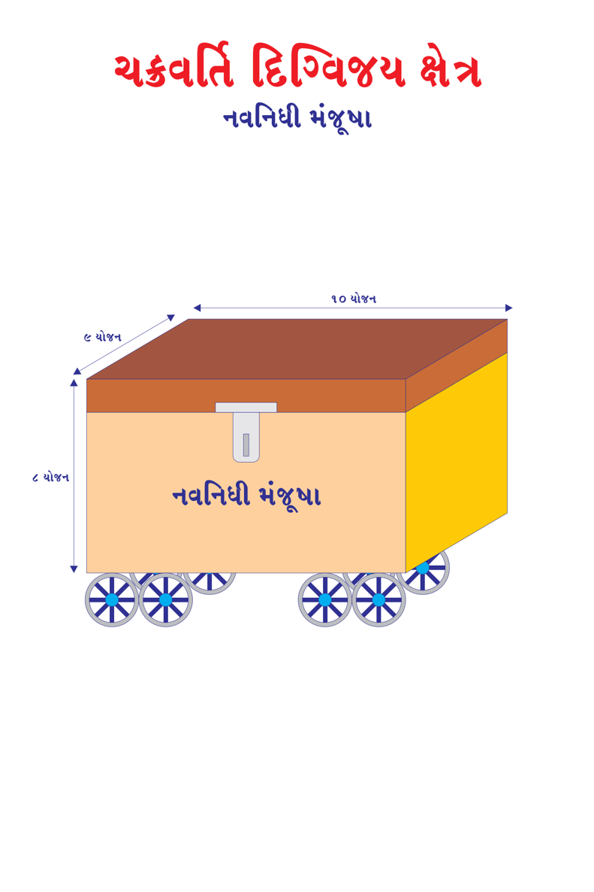
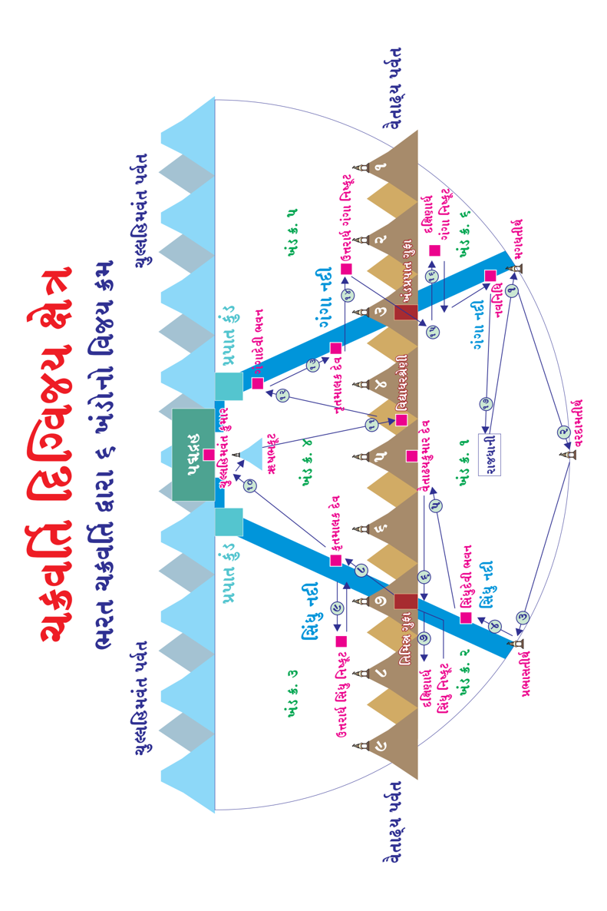

This book Unicode and EPUB Converted by Parth Shah (myself) free of charge as Gyaanseva. You can contact on caparthdshah@gmail.com for further details. You may quote reference "Jain Website"
મનુષ્ય જીવ - 131 : ચક્રવર્તી-23 :
ચક્રવર્તી મહારાજાના વિશેષ રત્નોઃ
રથ -1:
રથના પૈડાઓના 48 આરા (એકેક પૈડાના 12 આરા, ચાર પૈડાઓના 48 આરા) લાલ સુવર્ણમય પટ્ટીઓથી સુદ્રઢ રીતે નાભિ (કેન્દ્ર) સાથે જોડાયેલા હોય છે. તે પૈડાની ચક્ર પરિધિ (ગોળાઇ)માં ઘસીને સાફ કરેલી, નવી-નવી પટ્ટીઓ સારી રીતે જોડેલી હોય છે. તેની મજબૂતાઇ માટે ઠેકઠેકાણે લગાડેલી લોખંડની પટ્ટીઓ અને ખીલીઓથી તે અતિ મનોહર (નયનરમ્ય) દેખાય છે. રથના પૈડા વાસુદેવના ચક્રરત્ન જેવા દેખાય છે.
રથમાં બાંધેલી જાળીમાં કર્કેતન રત્ન, ઇન્દ્રનીલરત્ન, સાસગરત્ન જડેલા હોય છે. તેની ધુરા પ્રશસ્ત, વિસ્તીર્ણ અને સમ હોય છે. ધુરા ચળકતા સુવર્ણથી નિર્મિત હોય છે. તે શ્રેષ્ઠ નગરની જેમ સુરક્ષિત (જેમ મુખ્ય દરવાજા છોડીને કિલ્લાના દ્વાર ગુપ્ત હોય છે તેમ સારથિના સ્થાનને છોડીને ધુરા ગુપ્ત હોય છે, દેખાતી નથી) હોય છે. તેની રાશ (દોરી) તપેલા સુવર્ણથી બનેલી હોય છે. રથમાં શોભા માટે અનેક સ્થાને કવચો સ્થાપિત હોય છે. રથ અસ્ત્ર, શસ્ત્રથી પૂર્ણ હોય છે. ઢાલ, બાણ, ધનુષ્ય, તલવાર, ત્રિશૂળ, ભાલા, તોમર (એક જાતનું બાણ), સેંકડો બાણો જેમાં હોય તેવા 32 ભાથાઓથી શોભાયમાન હોય છે.
રથ આયુધો કનકરત્નથી નિર્મિત, ચિત્રો ચિતરેલા હોય છે. રથમાં જોડાયેલા ઘોડાઓ હલીમુખ, બગલા, હાથીદાંત, ચંદ્ર, મોતી, મલ્લિકા, કુંદ, કટજ, નિગુંડી અને મોગરાના સફેદ ફૂલો, ઉત્તમ ફીણ સમૂહ, મોતીના હાર, કાશ (એક જાતનું ઘાસ) જેવા સફેદ હોય છે.
13
Page 273
જૈનમ્ જયતિ શાસનમ્
મનુષ્ય જીવ - 132 : ચક્રવર્તી-24 :
ચક્રવર્તી મહારાજાના વિશેષ રત્નોઃ
રથ-2:
ઘોડાઓની ગતિ દેવ, મન અને વાયુની ગતિને પરાજિત કરી શકે તેવી હોય છે. અશ્વોના અંગો ચાર ચમરોથી અને સુવર્ણના આભૂષણોથી શોભાયમાન હોય છે. તે રથ છત્ર, ધ્વજા, ઘંટડીઓ અને પતાકાઓથી યુક્ત હોય છે. તેની સંધીઓનું જોડાણ સુંદર રીતે કરાયેલું હોય છે. રથના બંને પૈડા પરનું ઢાંકણ સુંદર હોય છે. ધૂંસરના બન્ને ખૂણા સુંદર હોય છે. વજ્રરત્નથી આબદ્ધ બંને નાભિ સુંદર અને શ્રેષ્ઠ સુવર્ણથી શોભાયમાન હોય છે.
રથ યોગ્ય શિલ્પકારો દ્વારા નિર્મિત હોય છે. ઉત્તમ ઘોડાઓથી યુક્ત હોય છે. તેની લગામ નિપુણ સારથિના હાથમાં હોય છે. રથ ઉત્તમમાં ઉત્તમ રત્નોથી સુશોભિત હોય છે. નાની-નાની સોનાની ઘંટડીઓથી અલંકૃત હોય છે. શત્રુઓથી અજેય (ક્યારેય જીતી શકાતો નથી) હોય છે. રથનો રંગ કમળ, પોપટની ચાંચ જેવો લાલ હોય છે. તેની કાંતિ ઉગતા સૂર્ય જેવી હોય છે. સર્વ ઋતુઓના સુગંધીત પુષ્પોની ગૂંથેલી માળાઓ રથ પર લટકેલી હોય છે.
રથ પર ઊંચી સફેદ ધ્વજા લહેરાતી હોય છે. મહામેઘના ગર્જના જેવો તેનો ઘોષ અત્યંત ગંભીર હોય છે. તે ઘોષથી શત્રુઓના હૃદય ધ્રૂજી ઉઠે છે. રથનું નામ પૃથ્વીવિજયલાભ હોય છે. કેમકે રથના નામ પ્રમાણે ગુણ હોય છે. રથમાં બેસનાર ચક્રવર્તી હંમેશા વિજયી થાય છે.
14
Page 274
જૈન વિજ્ઞાન
મનુષ્ય જીવ - 133 : ચક્રવર્તી-25:
ચક્રવર્તી મહારાજાના વિશેષ રત્નોઃ
સેનાપતિ :
સેનાપતિ, ચક્રવર્તી મહારાજાની સેનાનો નેતા હોય છે. સેનાપતિનો યશ ફેલાયેલો હોય છે. અતિ બળવાન અને પરાક્રમી, સ્વભાવે મહાન અને ગંભીર, ઓજસ્વી, તેજસ્વી, ઉત્તમ લક્ષણોથી યુક્ત, વિવિધ ભાષાઓના જાણકાર અને નિપુણ (હોંશિયાર) હોય છે. શિષ્ટ ભાષી, ક્ષેત્રમાં ઊંડા, દૂર્ગમ, વિવિધ સ્થાનોના ભોમિયા હોય છે. બાણ વગરે અસ્ત્ર, તલવાર વગેરે શસ્ત્ર ચલાવવામાં કુશળ હોય છે. ચતુરંગિણી સેના ઘોડા, હાથી, રથ અને ઉત્તમ યોદ્ધાથી યુક્ત હોય છે.
ચર્મરત્નઃ
શ્રીવત્સ જેવા આકારવાળું, મોતી, તારા, અર્ધ (અડધા) ચંદ્ર જેવા ચિત્રોથી ચિતરેલું, અચલ ચલિત ન થાય તેવું), અકંપ (ધ્રૂજે નહીં તેવું) અને અભેદ્ય કવચ જેવું, નદી અને સમુદ્રને પાર કરવાની સંપૂર્ણ ક્ષમતા સહિત હોય છે. દૈવી શક્તિથી આ ચર્મરત્ન ઉપર વાવેલા 17 પ્રકારના ધાન્ય (1) ચોખા (2) જવ (3) વ્રીહિ (એક જાતના ચોખા) (4) કોદ્રવ (5) રાલ (6) તલ (7) મગ (8) અડદ (9) ચોળા (10) ચણા (11) તુવેર (12) મસૂર (13) કળથી (14) ઘઉં (15) રાજમા (16) અળસી (17) શણ એક દિવસમાં ઉત્પન્ન થઇ જાય છે. વરસાદનું આગમન જાણીને ચક્રવર્તી મહારાજાના હાથનો સ્પર્શ થતાં જ 12 યોજન લાંબો થઇ જાય છે. ચક્રવર્તી મહારાજાના સેનાપતિના હાથનો સ્પર્શ થતાં જ તે વિશાળ નૌકા બની જાય છે. તેના ઉપર ચક્રવર્તી મહારાજાની સંપૂર્ણ સેના (હાથી, ઘોડા, રથ અને યોદ્ધા) મહાનદી પાર કરી શકે છે.
15
Page 275
જૈનમ્ જયતિ શાસનમ્
મનુષ્ય જીવ - 134 : ચક્રવર્તી-26 :
ચક્રવર્તી મહારાજાના વિશેષ રત્નોઃ
દંડરત્નઃ
પાંચ કાતળીરૂપ રેખાથી યુક્ત, વજ્રના સારથી નિર્મિત, સમગ્ર શત્રુ સેનાનું વિનાશક, ચક્રવર્તી મહારાજાની સેનાના માર્ગમાં આવતા અને પડાવ સ્થાનના ખાડા-ટેકરા, ઊંચી-નીચી ભૂમિને, ટેકરાઓને, પડી જવાય તેવી પથરાળ જગ્યાને સમતલ કરે છે. તે ચક્રવર્તી મહારાજા માટે શાંતિકર, શુભંકર, હિતકર, ઇચ્છિત મનોરથોને પૂર્ણ કરનાર, 1,000 દેવોથી અધિષ્ઠિત, કોઇપણ સ્થાને પ્રતિઘાત ન પામે તેવું અબાધિત હોય છે.
મણિરત્નઃ
મણિરત્ન 4 અંગુલ લાંબુ અને 2 અંગુલ પહોળું, અમૂલ્ય, ત્રિકોણાકાર (ત્રણ ખૂણા અને છ કોટિ (હાંસ) વાળું હોય છે. મણિરત્ન અનુપમ દ્યુતિયુક્ત (પ્રકાશમાન), દિવ્ય, મણિઓમાં સર્વોત્કૃષ્ટ, વૈડૂર્યમણિની જાતિનું, સર્વ પ્રાણીઓને પ્રિય હોય છે. તેને મસ્તક પર ધારણ કરનારને કોઇપણ જાતનું દુઃખ રહેતું નથી, તેના સર્વ દુઃખ, ચિંતા નાશ પામે છે, તેમજ સદાકાળ નીરોગી રહે છે, તેના પર તિર્યંચ, મનુષ્ય કે દેવો દ્વારા કોઇ જ ઉપસર્ગોની અસર થતી નથી. સંગ્રામમાં પણ કોઇ શસ્ત્ર તેનો વધ કરી શકતું નથી, આ શ્રેષ્ઠ મણિને જે મનુષ્ય ધારણ કરે તેનું યૌવન સદાકાળ સ્થિર રહે છે. તેના વાળ-નખ વધતાં નથી, તે સર્વ પ્રકારના ભયથી મુક્ત રહે છે.
16
Page 276
જૈન વિજ્ઞાન
મનુષ્ય જીવ - 135 : ચક્રવર્તી-27 :
ચક્રવર્તી મહારાજાના વિશેષ રત્નોઃ
કાકણિરત્નઃ
6 તલ, 12 કોટિ (હાંસ), 8 કર્ણિકા (ખૂણાવાળું), એરણ (હથોડી)ના આકારવાળું, 8 સોનામહોર (અંદાજે 8 તોલા) જેટલું વજન હોય છે. તે સર્વપ્રકારના સ્થાવર-જંગમ વિષ (ઝેર)ને દૂર કરે છે. અતુલ્ય, સમચોરસ, સમતલ હોય છે. ચક્રવર્તી મહારાજાના રાજકર્મચારી કોઇપણ માન-ઉન્માનના વ્યવહારોમાં કાકણિરત્નથી અંકિત કરે તે માનાદિ પ્રમાણિક ગણાય છે. (દા. ત. આપણામાં ISI માર્ક પ્રચલિત છે વસ્તુના પ્રમાણની!) કાકણિરત્ન 12 યોજન સુધી પ્રકાશ પાથરે છે અને ગાઢ અંધકારનો નાશ કરે છે. ચક્રવર્તી મહારાજની છાવણીમાં રાત્રે પણ દિવસ જેવો પ્રકાશ કરે છે.
અશ્વરત્નઃ
અશ્વ એટલે ઘોડો. અશ્વરત્નની ખરી(પગના નખ)થી કાન સુધી 80 અંગુલની ઊંચાઇ, મધ્યમાં પેટ પાસે 99 અંગુલની ગોળાઇ, મુખથી પૂંછ સુધી 108 અંગુલની લંબાઇ હોય છે. અશ્વરત્નનું મસ્તક 32 અંગુલ, 4 અંગુલના કાન, 20 અંગુલની બાહા (અર્થાત્ મસ્તકથી નીચે અને ઘૂંટણથી ઉપરનો ભાગ) 4 અંગુલના ઘૂંટણ, 16 અંગુલની જંઘા (ઘૂંટણથી ખરી સુધીનો ભાગ), 4 અંગુલની ખરી હોય છે. તેનો મધ્યભાગ ઉપર નીચે સાંકડો અને મધ્યમાં વિસ્તૃત, કોઠી જેવો ગોળ અને ચલન સ્વભાવવાળો હોય છે. 1) હોઠનો નીચેનો ભાગ, 2) કંઠ, 3) બંને કાન, 4) પીઠનો ભાગ, 5) પીઠનો મધ્યભાગ, 6) આંખો, 7) બંને હોઠ, 8) પાછળના પગના ઘૂંટણનો ઉપરનો ભાગ, 9) આગળના પગના ઘૂંટણનો ઉપરનો ભાગ, 10) પેટનો ભાગ, 11) બંને પડખા અને 12) લલાટ. આ 12 અંગ ઉપર ચક્ર આકારે ચિન્હ હોય છે. તેવો અશ્વ શ્રેષ્ઠ કહેવાય.
17
Page 277
જૈનમ્ જયતિ શાસનમ્
મનુષ્ય જીવ - 136 : ચક્રવર્તી-28 :
ચક્રવર્તી મહારાજાના વિશેષ રત્નોઃ
અશ્વરત્નઃ
ઘોડેસવાર બેસે ત્યારે તેની પીઠ કાંઇક નમી જાય છે. ઘોડેસવાર સુખપૂર્વક તેના પર બેસી શકે તેવી પીઠ હોય છે. તેના મુખપર બાંધવામાં આવતું અલંકાર સુવર્ણમય અને આભલા જડિત હોય છે. તેની લગામ શ્રેષ્ઠ સુવર્ણમય પુષ્પો અને આભાલાથી શોભિત રત્નમય હોય છે. તેની પીઠ, મણિથી જડિત સુવર્ણમય પાંદડીઓ, ઘૂઘરીઓ તથા મોતીઓથી સુશોભિત હોય છે. તેનું મુખ કર્કેતનરત્ન, ઇન્દ્રનીલરત્ન, મસારગાલરત્ન તથા માણેક જડિત સૂત્રક નામના મુખ આભરણથી સજ્જિત હોય છે. તેના કપાળ પર પદ્મ આકારનું સુવર્ણ તિલક કરવામાં આવે છે.
દૈવી કુશળતાથી તેને વિભૂષિત કરવામાં આવે છે. તેનું ભાલ (લલાટ) તેજ યુક્ત હોય છે. તેની આંખ ખૂલી તથા મોટી હોય છે. તેના નાક ઉપર અભિસેચન (લક્ષ્મીના અભિષેક સૂચક) નામનું ચિન્હ હોય છે. તે પાણીમાં ચાલવા છતાંય ડૂબે નહીં. તે ઘોડેસવારના સંકેત માત્રથી સમજી લેનાર, ભદ્ર અને વિનીત હોય છે. તેની ગતિ દેવ, મન, પવન, ગરુડ પક્ષીની ગતિને જીતી જાય તેવી ચપળ અને શીઘ્રગામી હોય છે. તે કોઇને પણ લાત કે પૂંછડાથી મારતો નથી. તે અગ્નિ, પત્થર, ધૂળ, કાદવ, કાંકરા, રેતી, નદીતટ, પર્વતોની ખીણ, ગિરિ કંદરાને પાર કરવા સમર્થ હોય છે. તેને સમર્થ યોદ્ધાઓ રણમાં પછાડી શકતા નથી. અશ્વરત્ન અતિસુંદર હોય છે.
18
Page 278
જૈન વિજ્ઞાન
મનુષ્ય જીવ - 137 : ચક્રવર્તી-29 :
ચક્રવર્તી મહારાજાના વિશેષ રત્નોઃ
અસિરત્નઃ
ચક્રવર્તીનું અસિરત્ન (તલવાર) નીલકમળ જેવી શ્યામ હોય છે. તેને ઘૂમાવવામાં આવે ત્યારે તે ચંદ્રમંડળ જેવી લાગે છે. તે શત્રુ વિઘાતક હોય છે. તેની મૂઠ કનકરત્નની બનેલી હોય છે. તે નવમલ્લિકાના પુષ્પ જેવી સુગંધ થી સુવાસિત હોય છે. વિવિધ મણિમય લતા આદિના ચિત્રોથી ચિત્રિત બધાને આશ્ચર્યમાં ગરકાવ કરી દે છે. શાણ પર ઘસવાથી તેની ધાર તીક્ષ્ણ અને પ્રકાશિત રહે છે. આ તલવાર 1,000 દેવોથી અધિષ્ઠિત હોય છે. અસિરત્ન (તલવાર) વાંસ, વૃક્ષ, શીંગડા, હાડકાં, હાથીદાંત, લોખંડનો દંડ, વજ્ર (હીરા)નું ભેદન કરવામાં સમર્થ હોય છે. સર્વે ન ભેદી શકાય તેવી વસ્તુઓનું પણ ભેદન કરે છે. અસિરત્ન 50 અંગુલ લાંબી, 16 અંગુલ પહોળી અને અડધી અંગુલ જાડી હોય છે.
છત્રરત્નઃ
છત્રરત્ન 99,000 સુવર્ણ નિર્મિત સળીયાઓથી સુશોભિત હોય છે. તે મહા મૂલ્યવાન હોય છે. તેને જોયા પછી શત્રુઓ શસ્ત્ર ઉઠાવી શકતા નથી, યુદ્ધ કરી શકતાં નથી. તે છિદ્ર (કાણાં) આદિ દોષો રહિત હોય છે. તે છત્ર ઉન્નત (ઊંચી) અને ગોળ હોય છે. તેનો દંડ (હાથો) કમળકર્ણિકા જેવો ગોળ, મૃદુ અને રજતમય સફેદ હોય છે. છત્ર મધ્ય ભાગમાં પાંજરા જેવું લાગે છે. તે છત્રમાં અનેક પ્રકારના ચિત્રોથી ચિત્રિત હોય છે. તેના ઉપર મણિ, મોતી, પ્રવાલ, રક્ત સુવર્ણ તથા પાંચ વર્ણોના દેદીપ્યમાન રત્નોથી કળશ આદિ આકારો બનાવ્યા હોય છે.
19
Page 279
જૈનમ્ જયતિ શાસનમ્
મનુષ્ય જીવ - 138 : ચક્રવર્તી-30 :
ચક્રવર્તી મહારાજાના વિશેષ રત્નોઃ
છત્રરત્નઃ
રત્નના કિરણો જેવા રંગની આભા ઉપસાવવામાં નિપુણ કારીગરોએ તેમાં કિરણો રેલાવતા રંગો પૂર્યા હોય છે. રાજલક્ષ્મીના ચિન્હથી અંકિત હોય છે. તે છત્ર અર્જુન નામના શ્વેતસુવર્ણમય વસ્ત્રથી બનેલું હોય છે. તેને ફરતો રક્ત સુવર્ણમય વસ્ત્રનો પટ્ટો હોય છે. તે પૂર્ણ ગોળાકાર હોય છે. તે છત્રરત્નનો સ્વાભાવિક વિસ્તાર ચક્રવર્તી મહારાજાના ધનુષ્ય પ્રમાણ લાંબુ - પહોળું હોય છે. તે સૂર્યનો તાપ, વાયુ, વરસાદના વિઘ્નોને નાશ કરનાર હોય છે. ચક્રવર્તી મહારાજાના પૂર્વ જન્મના તપ- પુણ્યના ફળ સ્વરૂપે પ્રાપ્ત થાય છે. છત્રરત્ન વિશિષ્ટ યોદ્ધાઓથી પણ ખંડિત થતું નથી. ઐશ્વર્ય આદિ અનેક ગુણોનું પ્રદાયક હોય છે. ઋતુથી વિપરીત સુખદાયક છાયા કરે છે. ઠંડી ઋતુમાં ગરમ છાયા અને ગરમીમાં શીતળ છાયા આપે છે. આવું છત્ર વૈમાનિક દેવલોકના દેવો માટે પણ દુર્લભ હોય છે. તે છત્રની ચારેબાજુ ફૂલની માળાઓ લટકતી હોય છે. તે છત્ર 1,000 દેવોથી અધિષ્ઠિત છે. જ્યારે ચક્રવર્તી મહારાજાના હાથનો સ્પર્શ થતાં જ 12 યોજન વિસ્તારમાં ફેલાય છે.
20
Page 280
જૈન વિજ્ઞાન
મનુષ્ય જીવ - 139 : ચક્રવર્તી-31:
ચક્રવર્તી મહારાજાના વિશેષ રત્નોઃ
ગાથાપતિરત્નઃ
મનોહરમાં મનોહર રૂપવાળા ગાથાપતિરત્ન શિલાની જેમ સ્થિર એવા ચર્મરત્ન ઉપર ડાંગર, જવ, ઘઉં, મગ, અડદ, તલ, કળથી, ચોખા, વાલ, કોદરા, કોસ્તુંભરી, કાંગ, રાળ વગેરે અનેક પ્રકારના અનાજ, વનસ્પતિ, શાકભાજીના બીજ નાંખી (તેમને ખેડવું નથી પડતું) સૂર્યાસ્ત સુધી તે પદાર્થ ઊગાડવામાં કુશળ ખેડૂતરૂપે મનુષ્યોમાં પ્રસિદ્ધ હોય છે. ગાથાપતિરત્ન તે જ દિવસે વાવેલા, પકવેલા, લણીને સાફ કરવામાં કુશળ હોય છે. સૂર્યોદય સમયે પ્રથમ પ્રહરમાં ધાન્યનું વાવેતર કરે, બીજા પ્રહરે પાણીનું સિંચન થતાં વૃદ્ધિ થાય, ત્રીજા પ્રહરે પરિપકવ થાય અને ચોથા પ્રહરે લણવામાં આવે. એકંદરે સૂર્યોદયથી સૂર્યાસ્ત સુધીમાં પાક તૈયાર થઇ જાય છે. આવા ધાન્ય ભરેલાં હજારો કુંભો (25,600 ખોબો ધાન્ય ભરીએ ત્યારે 1 કુંભ થાય) ચક્રવર્તી મહારાજા સમક્ષ પ્રસ્તુત કરે છે.
સ્ત્રીરત્નઃ
સ્ત્રીરત્નનું માન (પાણીથી છલોછલ કુંડમાં 32 શેર પાણી નીકળે તો તે વ્યક્તિ માનયુક્ત કહેવાય), ઉન્માન (વ્યક્તિને ત્રાજવામાં તોલતા 1000 પલ વજન થાય તો ઉન્માન કહેવાય), પ્રમાણ (જે વ્યક્તિનું મુખ 12 અંગુલ અને કુલ ઉંચાઇ 108 અંગુલ હોય તો શ્રેષ્ઠ પ્રમાણ કહેવાય)થી યુક્ત હોય છે. તે તેજસ્વી, રૂપ અને 32 લક્ષણોથી યુક્ત હોય છે. સ્થિર યૌવના (સદાય આજીવન યુવાન રહે છે) હોય છે.
21
Page 281
જૈનમ્ જયતિ શાસનમ્
મનુષ્ય જીવ - 140 : ચક્રવર્તી-32 :
ચક્રવર્તી મહારાજાના વિશેષ રત્નોઃ
સ્ત્રીરત્નઃ
તેના નખ અને વાળ મર્યાદાથી વધુ નથી વધતાં. તેનો સ્પર્શ સર્વ રોગનો નાશ કરે છે. તેના ઉપભોક્તાના બળની વૃદ્ધિ કરે છે. તે ઇચ્છિત ઠંડું, ગરમ સ્પર્શથી યુક્ત હોય છે. એટલે કે, ઠંડી ઋતુમાં ગરમ અને ગરમ ઋતુમાં ઠંડી સ્પર્શના વાળી હોય છે.
તેની કમર, પેટ અને ત્વચા આ ત્રણ અંગ પાતળા હોય છે. આંખના ખૂણા, હોઠ અને યોનિ આ ત્રણ અંગ લાલ હોય છે. તેના સ્તન, જઘન (કમરનો પાછળનો ભાગ), બંને હાથ, પગ અને આંખો સુંદર હોય છે. માથાના વાળ અને દાંત મનોહર હોય છે. પેટ ઉપર ત્રણ રેખા હોય છે. તેના સ્તન, જઘન અને યોનિ આ ત્રણ અંગ ઉન્નત-પુષ્ટ હોય છે. નાભિ, સ્વભાવ અને સ્વર ગંભીર હોય છે. વાળ, ભ્રમર અને આંખની કીકી આ ત્રણ અંગ કાળા હોય છે. દાંત, સ્મિત અને ચક્ષુ (આંખ) આ ત્રણ સફેદ હોય છે. ચોટલો, ભુજા અને લોચન આ ત્રણ લાંબા હોય છે. શ્રોણીચક્ર, જઘન અને નિતંબ આ ત્રણ પહોળા હોય છે.
તે સમચતુરસ્ર સંસ્થાન યુક્ત (તીર્થંકર પરમાત્માના લેખમાં જણાવેલ છે) હોય છે. તે ક્ષેત્રની સર્વે સ્ત્રીઓમાં પ્રધાન (મુખ્ય) હોય છે. પુરુષોના મનને પ્રસન્ન કરનારી હોય છે. તેનો પહેરવેશ શ્રૃંગારના ઘર જેવો હોય છે. ઉત્તમ શ્રૃંગાર અને ઉત્તમ વેશયુક્ત હોય છે. તે લોક વ્યવહારમાં કુશળ અને પ્રવિણ હોય છે. દેવાંગનાઓના સૌંદર્યનું અનુસરણ કરતી તે કલ્યાણકારી યૌવન યુક્ત હોય છે.
ચક્રવર્તી મહારાજાને વિદ્યાધર રાજા તરફથી જ સ્ત્રીરત્ન ભેટમાં અપાય છે. વિદ્યાધરો વૈતાઢ્ય પર્વત ઉપર રહે છે.
22
Page 282
જૈન વિજ્ઞાન
મનુષ્ય જીવ - 141 : ચક્રવર્તી-33 :
ચક્રવર્તી મહારાજાના 14 મહારત્નોઃ ટૂંકમાં વિવેચન
1) ચક્રરત્ન
પ્રમાણ : એક ધનુષ્ય
ઉત્પત્તિ સ્થાનઃ આયુધશાળા (શસ્ત્રાગાર)
મુખ્ય કાર્યઃ આકાશમાં ચાલતુ માર્ગ (રસ્તો) બતાવે, વિજય અપાવે.
વિશેષતાઃ શત્રુને સેંકડો વર્ષે હણીને જ ચક્રવર્તી મહારાજ પાસે આવે, પોતાના ગોત્રીને ન હણે (મારી ન નાખે).
દેવ અધિષ્ઠિતઃ 1,000 દેવો
2) દંડરત્નઃ
પ્રમાણઃ બે હાથ
ઉત્પત્તિ સ્થાનઃ આયુધશાળા (શસ્ત્રાગાર)
મુખ્ય કાર્યઃ વિષમભૂમિ સમતલ કરે, ગુફાના દ્વાર ખોલે
વિશેષતાઃ મનોરથો પૂર્ણ કરનાર અને શાંતિકર હોય છે.
દેવ અધિષ્ઠિત : 1,000 દેવો
3) અસિરત્ન (તલવારઃ)
પ્રમાણઃ 50 અંગુલ
ઉત્પત્તિ સ્થાનઃ આયુધશાળા (શસ્ત્રાગાર)
મુખ્ય કાર્યઃ શત્રુનો નાશ કરે
વિશેષતાઃ પહાડ આદિ ભેદે, વિજય અપાવે
23
Page 283
જૈનમ્ જયતિ શાસનમ્
દેવ અધિષ્ઠિત : 1,000 દેવો
4) છત્રરત્નઃ
પ્રમાણઃ બે હાથ
ઉત્પત્તિ સ્થાનઃ આયુધશાળા (શસ્ત્રાગાર)
મુખ્ય કાર્યઃ વરસાદ, વાયુ, તડકાથી રક્ષા કરે
વિશેષતાઃ ઠંડીના સમયે ગરમી આપે, ગરમીના સમયે ઠંડક આપે, ચક્રવર્તી મહારાજના હાથનો સ્પર્શ થતાં જ 12 યોજન સુધી વિસ્તાર (ફેલાય) પામે.
દેવ અધિષ્ઠિત : 1,000 દેવો
24
Page 284
જૈન વિજ્ઞાન
જૈન વિજ્ઞાન - 219
મનુષ્ય જીવ - 142 : ચક્રવર્તી-34 :
ચક્રવર્તી મહારાજાના 14 મહારત્નોઃ ટૂંકમાં વિવેચન
5) ચર્મરત્નઃ
પ્રમાણઃ બે હાથ
ઉત્પત્તિ સ્થાનઃ લક્ષ્મી ભંડાર
મુખ્ય કાર્યઃ નાવ (હોડી) આકાર રૂપે થઇ ચક્રવર્તી મહારાજની વિશાળ સેનાને નદી પાર કરાવે.
વિશેષતાઃ વિવિધ આકાર ધારણ કરી શકે, ચક્રવર્તી મહારાજના હાથનો સ્પર્શ થતાં જ 12 યોજન સુધી વિસ્તાર પામે.
દેવ અધિષ્ઠિત : 1,000 દેવો
6) મણિરત્નઃ
પ્રમાણઃ 4 અંગુલ
ઉત્પત્તિ સ્થાનઃ લક્ષ્મી ભંડાર
મુખ્ય કાર્યઃ તત્કાલ સૂર્ય જેવો દિવ્ય પ્રકાશ કરે, ભયનું નિવારણ કરે.
વિશેષતાઃ સર્વ દુઃખનું હરણ કરે, આરોગ્ય પ્રદાન કરે, સદાય યૌવન સ્થિર રાખે.
દેવ અધિષ્ઠિત : 1,000 દેવો
7) કાકણિરત્નઃ
પ્રમાણઃ 4 અંગુલ
ઉત્પત્તિ સ્થાનઃ લક્ષ્મી ભંડાર
મુખ્ય કાર્યઃ આલેખિત રેખા દ્વારા લાંબા સમય સુધી સૂર્ય જેવો પ્રકાશ આપે.
25
Page 285
જૈનમ્ જયતિ શાસનમ્
દેવ અધિષ્ઠિત : 1,000 દેવો
8) સેનાપતિરત્નઃ
પ્રમાણઃ પ્રમાણોપેત (યોગ્ય દેહ પ્રમાણ)
ઉત્પત્તિ સ્થાનઃ ચક્રવર્તી મહારાજના નગરમાં
મુખ્ય કાર્યઃ યુદ્ધ સંચાલન કરે, નિષ્કૂટોની વિજય યાત્રા કરે.
વિશેષતાઃ સર્વ લિપિ (લખાણ), સર્વ સ્થાન, યુદ્ધ વ્યૂહરચનાના જાણકાર હોય છે.
દેવ અધિષ્ઠિત : 1,000 દેવો
26
Page 286
જૈન વિજ્ઞાન
મનુષ્ય જીવ - 143 : ચક્રવર્તી-35 :
ચક્રવર્તી મહારાજાના 14 મહારત્નોઃ ટૂંકમાં વિવેચન
9) ગાથાપતિરત્નઃ
પ્રમાણઃ પ્રમાણોપેત (યોગ્ય દેહ પ્રમાણ)
ઉત્પત્તિ સ્થાનઃ ચક્રવર્તી મહારાજના નગરમાં
મુખ્ય કાર્યઃ અન્નભંડારના અધિપતિ, ભોજ્ય (ભોજન) સામગ્રી ઉત્પન્ન કરે, ધાન્યને શીઘ્ર ઊગાડે
વિશેષતાઃ સવારે વાવેલા ધાન્યને સાંજે લણી શકે.
દેવ અધિષ્ઠિત : 1,000 દેવો
10) વર્દ્ધકિરત્નઃ
પ્રમાણઃ પ્રમાણોપેત
ઉત્પત્તિ સ્થાનઃ ચક્રવર્તી મહારાજના નગરમાં
મુખ્ય કાર્યઃ વાસ્તુ શાસ્ત્ર અનુસાર ગામ, નગર, ઘર, પુલ, સૈન્યનો પડાવ નિર્માણ કરે.
વિશેષતાઃ મુહૂર્ત (48 મિનિટ) જેટલા સમયમાં નગર આદિની રચના કરી શકે તેવા વિશિષ્ટ શિલ્પકાર.
દેવ અધિષ્ઠિત : 1,000 દેવો
11) પુરોહિતરત્નઃ
પ્રમાણઃ પ્રમાણોપેત
ઉત્પત્તિ સ્થાનઃ ચક્રવર્તી મહારાજના નગરમાં
27
Page 287
જૈનમ્ જયતિ શાસનમ્
મુખ્ય કાર્યઃ શાંતિકર્મ કરે, પુરોહિત (પંડિત)નું કામ કરે.
વિશેષતાઃ જ્યોતિષ વિદ્યા, મંત્ર, તંત્રમાં પારંગત હોય.
દેવ અધિષ્ઠિત : 1,000 દેવો
12) ગજરત્નઃ
પ્રમાણઃ પ્રમાણોપેત
ઉત્પત્તિ સ્થાનઃ વૈતાઢ્ય પર્વતની તળેટીમાં
મુખ્ય કાર્યઃ ચક્રવર્તી મહારાજ તેના ઉપર સવારી કરે
દેવ અધિષ્ઠિત : 1,000 દેવો
28
Page 288
જૈન વિજ્ઞાન
મનુષ્ય જીવ - 144 : ચક્રવર્તી-36 : ચક્રવર્તી મહારાજાના 14 મહારત્નોઃ ટૂંકમાં વિવેચન
13) અશ્વરત્નઃ
પ્રમાણઃ 108 અંગુલ લાંબુ, 80 અંગુલ ઊંચુ
ઉત્પત્તિ સ્થાનઃ વૈતાઢ્ય પર્વતની તળેટીમાં
મુખ્ય કાર્યઃ સેનાપતિ નિષ્કૂટ વિજય માટે તેના ઉપર સવારી કરે, વિજયદાતા.
વિશેષતાઃ પાણી, કમળતંતુ પર ચાલી શકે, અલ્પ (ક્ષણિક ક્રોધી, કુચેષ્ટા (અપલક્ષણ) થી રહિત વિનયી હોય.
દેવ અધિષ્ઠિત : 1,000 દેવો
14) સ્ત્રીરત્નઃ
પ્રમાણઃ પ્રમાણોપેત
ઉત્પત્તિ સ્થાનઃ વિદ્યાધર શ્રેણીમાં
મુખ્ય કાર્યઃ ચક્રવર્તી મહારાજના ઉપભોગ માટે
વિશેષતાઃ અવસ્થિત યૌવન હોય, ચક્રવર્તી મહારાજના બળની વૃદ્ધિ કરે, તેના સ્પર્શથી સર્વ રોગ શાંત થાય, ઠંડીના સમયે ગરમ અને ગરમીના સમયે તેનો સ્પર્શ શીતળતા ભર્યો હોય.
દેવ અધિષ્ઠિત : 1,000 દેવો
ચક્રવર્તી મહારાજાના 14 રત્નોમાંથી 7 રત્નો (ચક્રરત્ન, છત્રરત્ન, અસિરત્ન, મણિરત્ન, કાકણિરત્ન, ચર્મરત્ન, વજ્રરત્ન) એકેન્દ્રિય અને પૃથ્વીકાયમય છે. 2 રત્નો તિર્યંચ પંચેન્દ્રિય (હાથી, ઘોડો), 4 રત્નો પંચેન્દ્રિય પુરુષ (સેનાપતિરત્ન, વર્દ્ધકિરત્ન, પુરોહિતરત્ન, ગાથાપતિરત્ન) અને 1 રત્ન પંચેન્દ્રિય સ્ત્રી (સ્ત્રીરત્ન) હોય છે.
29
Page 289
ચક્રવર્તિ દિગ્વિજય ક્ષેત્ર
નવનિધી મંજૂષા

મનુષ્ય જીવ - 145 : ચક્રવર્તી-37 :
ચક્રવર્તી મહારાજાને પ્રાપ્ત થયેલ નવ નિધિઃ
ચક્રવર્તી મહારાજા ખંડ પ્રપાત ગુફાના દક્ષિણ દ્વારમાંથી બહાર નીકળી 12 યોજન લાંબી અને 9 યોજન શ્રેષ્ઠ નગર જેવી છાવણી તૈયાર કરાવે છે. તેમાં નિવાસ કરે છે. નવ નિધિઓની પ્રાપ્તિ માટે પૌષધવ્રત સાથે અઠ્ઠમ તપ કરે છે.
નવ નિધિઓ અપરિમિત રક્ત વગેરે રત્નોવાળા, શાશ્વત, અવિનાશી, અવ્યય, દેવ અધિષ્ઠિત, વિવિધ આચાર, વિવિધ વસ્તુઓની ઉત્પત્તિ અને વિધિઓ દર્શાવતું પુસ્તક સ્વરુપે હોવાથી લોકપુષ્ટિ દાયક છે.
પ્રસિદ્ધ નવ નિધિઓ :
1) નૈસર્પનિધિઃ
ગામ, ખાણ, નગર, પતન, દ્રોણમુખ, મંડબ, છાવણી, દુકાન, ઘર વગેરેના સ્થાપનની સમગ્ર વિધિ એટલે કે વાસ્તુશાસ્ત્ર સંબંધી સર્વે વિધિઓનું જ્ઞાન આ નિધિ દ્વારા પ્રાપ્ત થાય છે અને તે સંબંધિત કેટલીક સામગ્રીઓનો સંગ્રહ તેમાં હોય છે. તેના અધિષ્ઠાયક નૈસર્પ દેવ છે.
2) પાંડુકનિધિઃ
ગણતરી, માપ, તોલ વગેરેની ઉત્પત્તિ વિધિ, ગણી શકાય તેવા નાળિયેર વગેરે, માપી શકાય તેવા ધાન્ય વગેરે, તોલી શકાય તેવા ગોળ-સાકર વગેરે વસ્તુઓની ઉત્પાદન વિધિનું જ્ઞાન, આ નિધિ દ્વારા પ્રાપ્ત થાય છે તેમજ માપ, તોલ વગેરે યોગ્ય ધાન્ય, બીજ વગેરે પદાર્થોનો સંગ્રહ, સંરક્ષણ આ નિધિમાં હોય છે. તેના અધિષ્ઠાયક પાંડુક દેવ છે.
31
Page 291
જૈનમ્ જયતિ શાસનમ્
મનુષ્ય જીવ - 146 : ચક્રવર્તી-38 :
ચક્રવર્તી મહારાજાને પ્રાપ્ત થયેલ નવ નિધિઃ
3) પિંગલનિધિઃ
સ્ત્રીના, પુરુષના અને હાથી-ઘોડા વગેરે પશુઓના આભૂષણો બનાવવાની, તેનો ઉપયોગ કરવાની વિધિનું જ્ઞાન આ નિધિ દ્વારા પ્રાપ્ત થાય છે અને તે આભૂષણોનો સંગ્રહ આ નિધિમાં હોય છે. તેના અધિષ્ઠાયક પિંગળ દેવ છે.
4) સર્વરત્ન નિધિઃ
સાત એકેન્દ્રિય રત્ન અને સાત પંચેન્દ્રિય રત્ન, ચક્રવર્તી મહારાજના આ 14 શ્રેષ્ઠ રત્નો અને અન્ય અનેક રત્નોની ઉત્પત્તિ, નિષ્પત્તિ તથા તેના ઉપયોગ સંબંધી જાણકારી અને સંગ્રહ આ નિધિમાં હોય છે. આ નિધિ સર્વ રત્નના ભંડાર રૂપ છે. તેના અધિષ્ઠાયક સર્વરત્ન દેવ છે.
5) મહાપદ્મનિધિઃ
સર્વ પ્રકારના વસ્ત્રની ઉત્પત્તિ, તેની ડિઝાઇન, રંગવા, ધોવા વગેરે વિધિનું જ્ઞાન આ નિધિ દ્વારા થાય છે. તેમજ તે સંબંધી કેટલીય સાધન સામગ્રી પણ આ નિધિમાં હોય છે. તેના અધિષ્ઠાયક મહાપદ્મ દેવ છે.
6) કાલનિધિઃ
ત્રણેય કાળનું જ્ઞાન (ભૂતકાળ, વર્તમાનકાળ અને ભવિષ્યકાળ), જ્યોતિષ જ્ઞાન, પૂર્વ ભવોનું જ્ઞાન, તીર્થંકર, ચક્રવર્તી, વાસુદેવ આ ત્રણેના વંશની ઉત્પત્તિનું જ્ઞાન તથા 100 શિલ્પનું જ્ઞાન અને ખેતી વગેરે વિવિધ કાર્યો વિષયોનું જ્ઞાન આ નિધિ દ્વારા થાય છે. તેમજ આ નિધિમાં તે સંબંધિત વિવિધ સાધનો, ચિત્રો પણ હોય છે. તેના અધિષ્ઠાયક કાલ દેવ છે.
32
Page 292
જૈન વિજ્ઞાન
મનુષ્ય જીવ - 147 : ચક્રવર્તી-39 :
ચક્રવર્તી મહારાજાને પ્રાપ્ત થયેલ નવ નિધિઃ
7) મહાકાલનિધિઃ
લોખંડ, ચાંદી, સોનું, મણિ, મોતી, સ્ફટિક, પ્રવાલ વગેરેની ઉત્પત્તિ અને તેની ખાણો સંબંધી જ્ઞાન આ નિધિ દ્વારા પ્રાપ્ત થાય છે અને તે પદાર્થોનો સંગ્રહ પણ આ નિધિમાં હોય છે. તેના અધિષ્ઠાયક મહાકાલ દેવ છે.
8) માણવકનિધિઃ
યોદ્ધાઓ, તેના કવચો, શસ્ત્રો, ચક્રવ્યૂહ વગેરે યુદ્ધ નીતિ, સામ, દામ વગેરે ચાર પ્રકારના દંડનીતિ સંબંધી વિવિધ પ્રકારનું જ્ઞાન આ નિધિ દ્વારા પ્રાપ્ત થાય છે તથા તે સંબંધી કેટલાય સંગ્રહ આ નિધિમાં હોય છે. તેના અધિષ્ઠાયક માણવક દેવ છે.
9) શંખનિધિઃ
નટ વિધિ, નાટક અભિનય વિધિ, કાવ્ય વિધિ, ધર્મ વગેરે ચાર પ્રકારના પુરુષાર્થ અથવા સંસ્કૃત વગેરે ચાર પ્રકારની ભાષા યુક્ત કાવ્ય વિધિનું જ્ઞાન તથા વાજિંત્રોનું જ્ઞાન આ નિધિ દ્વારા પ્રાપ્ત થાય છે અને તે સંબંધિત વિવિધ સામગ્રી, ચિત્રો વગેરે પણ આ નિધિમાં હોય છે. તેના અધિષ્ઠાયક શંખ દેવ છે.
આ સર્વે નિધિઓના આકાર મંજુષા (પટારા, મોટી પેટી) જેવી હોય છે. તે દરેક નિધિને આઠ-આઠ પૈડાં હોય છે. તેની લંબાઇ 12 યોજન, પહોળાઈ 9 યોજન અને ઊંચાઇ 8 યોજન હોય છે.
નવ નિધિઓના મંજુષાના કમાડ વૈડુર્યમણિ જડેલા સુવર્ણમય, અનેક રત્નોથી પરિપૂર્ણ, ચંદ્ર, સૂર્ય તથા ચક્રના ચિન્હથી યુક્ત સમ રચનાવાળા હોય છે. 1 પલ્યોપમની આયુષ્યવાળા અધિપતિ દેવ હોય છે. તે દેવો તેમાં જ વસે છે. તેના અધિપતિ બનવાની ઇચ્છાથી કોઇ તેને ખરીદી શકતું નથી. નવ નિધિઓ ઘણાં ધન, રત્નોથી સમૃદ્ધિવંત હોય છે અને ચક્રવર્તીઓને વશમાં થઇ જાય છે.
33
Page 293
જૈનમ્ જયતિ શાસનમ્
મનુષ્ય જીવ - 148 : ચક્રવર્તી-40 :
ચક્રવર્તી મહારાજનો દિગ્વિજય ટૂંક સારઃ
પ્રથમ ખંડઃ
(1) માગધ તીર્થઃ
અધિપતિઃ માગધતીર્થકુમાર દેવ
વશ કરવાઃ અઠ્ઠમ તપ
વશ કરવાની વિધિઃ 12 યોજન દૂર તીર ફેંકીને
વિજય મેળવતાં મળતી ભેટઃ હાર, મુગટ વગેરે આભૂષણો તથા વસ્ત્ર.
(2) વરદામ તીર્થઃ
અધિપતિઃ વરદામતીર્થકુમાર દેવ
વશ કરવાઃ અઠ્ઠમ તપ
વશ કરવાની વિધિઃ 12 યોજન દૂર તીર ફેંકીને
વિજય મેળવતાં મળતી ભેટઃ વિષ (ઝેર) ઉપહારક ચૂડામણી શિરોભૂષણ (મસ્તકનું આભૂષણ)
(3) પ્રભાસ તીર્થઃ
અધિપતિઃ પ્રભાસતીર્થકુમાર દેવ
વશ કરવાઃ અઠ્ઠમ તપ
વશ કરવાની વિધિઃ 12 યોજન દૂર તીર ફેંકીને
34
Page 294
વિજય મેળવતાં મળતી ભેટઃ મોતીના ભંડાર, સુવર્ણના ભંડાર
જૈન વિજ્ઞાન
(4) સિંધુ ભવનઃ
અધિપતિઃ સિંધુદેવી
વશ કરવાઃ અઠ્ઠમ તપ
વશ કરવાની વિધિઃ સંકલ્પ માત્રથી
વિજય મેળવતાં મળતી ભેટઃ બે ભદ્રાસન તથા વિવિધ રત્નો ભરેલા 1008 કળશો
(5) વૈતાઢ્યગિરિકુમાર ભવનઃ
સ્થાનઃ વૈતાઢ્ય પર્વતના પાંચમા કૂટ (શિખર) ઉપર
અધિપતિઃ વૈતાઢ્યગિરિકુમાર દેવ
વશ કરવાઃ અઠ્ઠમ તપ
વશ કરવાની વિધિઃ સંકલ્પ માત્રથી
વિજય મેળવતાં મળતી ભેટઃ અભિષેક યોગ્ય રાજ અલંકારો
35
Page 295
જૈનમ્ જયતિ શાસનમ્
મનુષ્ય જીવ - 149 : ચક્રવર્તી-41 :
ચક્રવર્તી મહારાજના દિગ્વિજય ટૂંક સારઃ
(6) કૃતમાલકદેવ ભવનઃ
સ્થાનઃ વૈતાઢ્ય પર્વતના સાતમાં કૂટ (શિખર) ઉપર
અધિપતિઃ કૃતમાલક દેવ
વશ કરવાઃ અઠ્ઠમ તપ
વશ કરવાની વિધિઃ સંકલ્પ માત્રથી
વિજય મેળવતાં મળતી ભેટઃ સ્ત્રીરત્ન યોગ્ય તિલક વગેરે 14 પ્રકારના અલંકારો
ખંડ - 2:
(7) દક્ષિણાર્ધ સિંધુ નિષ્કૂટ :
અધિપતિઃ ભિન્ન ભિન્ન મ્લેચ્છ રાજાઓ
વશ કરવાની વિધિઃ સેનાપતિ દ્વારા યુદ્ધ કરીને
વિજય મેળવતાં મળતી ભેટઃ મૂલ્યવાન વસ્તુઓ
(8) તિમિસ્ર ગુફા દ્વાર ઉદઘાટન :
સ્થાનઃ તિમિસ્ર ગુફાનું દક્ષિણ દ્વાર
અધિપતિઃ કૃતમાલ દેવ
વશ કરવાઃ સેનાપતિ દ્વારા અઠ્ઠમ તપ
વશ કરવાની વિધિઃ ચક્રવર્તી મહારાજના દંડ રત્નથી ત્રણ વાર પ્રહાર કરીને દ્વાર ખોલે છે.
36
Page 296
જૈન વિજ્ઞાન
ખંડ નં. 4
(9) ઉત્તરાર્ધ ભરતનો મધ્ય ખંડઃ
અધિપતિઃ કિરાતો
વશ કરવાની વિધિઃ યુદ્ધ કરીને
વિજય મેળવતાં મળતી ભેટઃ બહુમૂલ્ય રત્નો
ખંડ નં. 3:
(10) ઉત્તરાર્ધ સિંધુ નિષ્કૂટઃ
અધિપતિઃ ભિન્ન ભિન્ન મ્લેચ્છ રાજાઓ
વશ કરવાની વિધિઃ સેનાપતિ દ્વારા યુદ્ધ કરીને
વિજય મેળવતાં મળતી ભેટઃ મૂલ્યવાન વસ્તુઓ
37
Page 297
જૈનમ્ જયતિ શાસનમ્
મનુષ્ય જીવ - 150 : ચક્રવર્તી-42 :
ચક્રવર્તી મહારાજના દિગ્વિજય ટૂંક સારઃ
(11) ચુલ્લહિમવંતકુમાર ભવનઃ
અધિપતિઃ ચુલ્લહિમવંતકુમાર દેવ
વશ કરવાઃ અઠ્ઠમ તપ
વશ કરવાની વિધિઃ 72 યોજન દૂર તીર ફેંકીને
વિજય મેળવતાં મળતી ભેટઃ શ્રેષ્ઠ ઔષધિ, કલ્પવૃક્ષની માળા, ગોશીર્ષ ચંદન વગેરે
(12) વિદ્યાધર શ્રેણીઃ
અધિપતિઃ રાજાઓ
વશ કરવાઃ અઠ્ઠમ તપ
વશ કરવાની વિધિઃ સંકલ્પ માત્રથી
વિજય મેળવતાં મળતી ભેટઃ સ્ત્રીરત્ન, આભૂષણો
(13) ગંગાદેવી ભવનઃ
અધિપતિઃ ગંગાદેવી
વશ કરવાઃ અઠ્ઠમ તપ
વશ કરવાની વિધિઃ સંકલ્પ માત્રથી
વિજય મેળવતાં મળતી ભેટઃ બે સિંહાસન તથા રત્નો ભરેલા 1008 કળશો
38
Page 298
જૈન વિજ્ઞાન
(14) નૃતમાલ ભવનઃ
અધિપતિઃ નૃતમાલ દેવ
વશ કરવાઃ અઠ્ઠમ તપ
વશ કરવાની વિધિઃ સંકલ્પ માત્રથી
વિજય મેળવતાં મળતી ભેટઃ આભૂષણોથી પૂર્ણ ભંડાર
ખંડ નં. 5:
(15) ઉત્તરાર્ધ ગંગા નિષ્કૂટઃ
અધિપતિઃ મ્લેચ્છ રાજાઓ
વશ કરવાની વિધિઃ સેનાપતિ દ્વારા યુદ્ધ કરીને
વિજય મેળવતાં મળતી ભેટઃ મૂલ્યવાન વસ્તુઓ
(16) ખંડપ્રપાત ગુફા દ્વાર ઉદઘાટનઃ
અધિપતિઃ નૃતમાલ દેવ
વશ કરવાઃ સેનાપતિ દ્વારા અઠ્ઠમ તપ
વશ કરવાની વિધિઃ દંડરત્નથી ત્રણ વાર પ્રહાર કરીને
39
Page 299
જૈનમ્ જયતિ શાસનમ્
મનુષ્ય જીવ - 151 : ચક્રવર્તી-43 :
ચક્રવર્તી મહારાજના દિગ્વિજય ટૂંક સારઃ
(17) નવનિધિ :
સ્થાનઃ ગંગા મહાનદી સમુદ્રને મળે ત્યાં ગંગાના દક્ષિણ કિનારે
અધિપતિઃ પ્રત્યેક નિધિના નામ પ્રમાણેના દેવો
વશ કરવાઃ અઠ્ઠમ તપ
વશ કરવાની વિધિઃ સંકલ્પ માત્રથી
વિજય મેળવતાં મળતી ભેટઃ નવનિધિઓ
ખંડ નં. 6:
(18) દક્ષિણાર્ધ ગંગા નિષ્કૂટ :
અધિપતિઃ મ્લેચ્છ રાજાઓ
વશ કરવાની વિધિઃ સેનાપતિ દ્વારા યુદ્ધ કરીને
વિજય મેળવતાં મળતી ભેટઃ મુલ્યવાન વસ્તુઓ
(19) રાજધાની પ્રવેશઃ
અધિપતિઃ નગર અધિષ્ઠાયક દેવો
વશ કરવાઃ નગરની સુખ શાંતિ માટે અઠ્ઠમ તપ
એકંદરે ચક્રવર્તી મહારાજા દિગ્વિજય યાત્રા દરમ્યાન 3 શાશ્વત તીર્થ, 2 મહાનદીની દેવી, 2 ગુફાના દેવ, 2 પર્વતના દેવ, વિદ્યાધર રાજા, નવનિધિઓ,
40
Page 300
જૈન વિજ્ઞાન
રાજધાની પ્રવેશ અને અભિષેક એમ કુલ 13 અઠ્ઠમ તપ પૌષધવ્રત સાથે કરે છે. ચક્રવર્તી મહારાજને વૈક્રિયલબ્ધિ હોવાથી ચુલ્લહિમવંત પર્વત ઉપર 72 યોજન સુધી તીર ફેંકવા ચક્રવર્તી મહારાજા પર્વતની ઊંચાઇ 100 યોજન જેટલું ઊંચું વૈક્રિય શરીર બનાવી તીર ફેંકે છે. તિમિસ્ર ગુફા અને ખંડપ્રપાત ગુફાને પ્રકાશિત રાખવા 49-49 મંડળ આલેખે છે અને તે તેમની હયાતી સુધી કાયમપણે રહે છે.
41
Page 301
ે

મનુષ્ય જીવ - 152 : ચક્રવર્તી-44 :
દિગ્વિજય - રાજધાની, નગરપ્રવેશઃ
છ ખંડના અધિપતિ, ચક્રવર્તી મહારાજા દિગ્વિજયમાં એવો કોઇપણ ક્ષેત્ર બાકી નથી, જેમાં વિજય કર્યો ન હોય! તમણે 32,000 રાજાઓને પરાજિત કરી સર્વ રત્નોમાં પ્રધાન ચક્રરત્ન વાળા, નવનિધિઓના અધિપતિ, સમૃદ્ધ કોષાગાર સંપન્ન લાંબા સમયે એટલે કે ઘણાં વર્ષો યુદ્ધ કર્યા બાદ વિજય મેળવે છે. દા. ત. ભરત ચક્રવર્તીએ 60,000 વર્ષે સંપૂર્ણ ભરતક્ષેત્રમાં વિજય મેળવ્યો હતો.
ચક્રવર્તી મહારાજા ગજરત્ન ઉપર બિરાજમાન થાય છે. તેમની આગળ 8-8ની સંખ્યામાં અષ્ટમંગલ પ્રતિકો પ્રસ્થાપિત થાય છે એટલે કે તેને લઇને રાજપુરુષો ચાલે છે. અષ્ટમંગલ પાછળ પાણીથી ભરેલ કળશ, ઝારીઓ, દિવ્ય છત્ર, પતાકા વગેરે લઇને રાજપુરુષો ચાલે છે. તેની પાછળ વૈડૂર્યરત્ન (નીલમ)થી નિર્મિત દેદીપ્યમાન દંડયુક્ત છત્ર ચાલે છે.
ચક્રરત્ન, છત્રરત્ન, ચર્મરત્ન, દંડરત્ન, અસિરત્ન, મણિરત્ન, કાકણિરત્ન આ સાત એકેન્દ્રિય રત્ન યથાક્રમે ચાલે છે. તેની પાછળ નવનિધિઓ ભૂમિગત રહીને ચાલે છે. તેની પાછળ 16,000 દેવો (ચક્રવર્તી મહારાજાના આત્મરક્ષક દેવ 2,000 અ 14 રત્નોના પ્રત્યેક રત્ન દીઠ 1,000 અધિપતિ દેવો) તેની પાછળ 32,000 રાજાઓ ચાલે છે. સેનાપતિરત્ન, ગાથાપતિરત્ન, વર્દ્ધકિરત્ન અને પુરોહિતરત્ન ચાલે છે. તેની પાછળ સ્ત્રીરત્ન (પરમ સુંદરી સુભદ્રા) ચાલે છે.
43
Page 303
જૈનમ્ જયતિ શાસનમ્
મનુષ્ય જીવ - 153 : ચક્રવર્તી-45 :
દિગ્વિજય - રાજધાની, નગરપ્રવેશઃ
સ્ત્રીરત્ન પાછળ 32,000 ઋતુ કલ્યાણિકા સ્ત્રીઓ (જેનો સ્પર્શ ઋતુથી પ્રતિકૂળ એટલે કે ઠંડીમાં ગરમ અને ગરમીમાં શીતળતા પ્રદાન કરનાર સ્ત્રીઓ, રાજકુળમાં જન્મ લેનારી કન્યાઓ), તેની પાછળ 32,000 જનપદ કલ્યાણિકા સ્ત્રીઓ (દેશના અગ્રગણ્ય પુરુષોની કન્યાઓ) યથાક્રમે ચાલે છે.
તેની પાછળ 32,000 નાટક મંડળીઓ, 360 રસોઇયાઓ, 18 શ્રેણી- પ્રશ્રેણીના લોકો ચાલે છે. તેની પાછળ 84 લાખ ઘોડાઓ, 84 લાખ હાથીઓ, 96 કરોડ પદયાત્રીઓ, તેની પાછળ અનેક રાજાઓ, રાજ સન્માનિત વિશિષ્ટ નાગરિકો યથાક્રમે ચાલે છે.
તેની પાછળ તલવારધારી, લાઠીધારી, ભાલાધારી, ધનુષ્યધારી, ચામરધારી, ઘોડા-બળદને વશમાં કરનાર પાશધારીઓ, ફલકધારી, પરશુધારી, પુસ્તકધારી, વીણાધારી, કુપ્યગ્રાહી, મશાલધારી, દીપકધારીઓ ચાલે છે.
દંડધારી, મસ્તક મુંડિત, શિખાધારી, જટાધારી, મોરપીંછધારી, હસાવનારા, ક્રીડા, ખેલ, તમાશા કરનાર, ખુશામતિયા, કામુક, કુચેષ્ટા કરનાર, ગાતા લોકો, નાચતા, હસતા, પાસા રમનારા, પ્રમોદક્રીડા કરનારા, ગીત શીખવાડનારા, સંભળાવનારા, કલ્યાણકારી વાક્ય બોલનારા, ભિન્ન-ભિન્ન અવાજ કરનારા લોકો યથાક્રમે ચાલે છે. આટલા વિશાળ સમુદાયમાં ચક્રવર્તી મહારાજા નગરપ્રવેશ કરે છે.
44
Page 304
જૈન વિજ્ઞાન
મનુષ્ય જીવ - 154 : ચક્રવર્તી-46 :
ચક્રવર્તી મહારાજનું રાજ્યાભિષેક :
રાજ્યાભિષેક સ્થાન : રાજધાનીના ઇશાનખૂણે
રચનાઃ રાજ્યાભિષેક સ્થાનની રચના ચક્રવર્તી મહારાજાના સેવક દેવતાઓ દ્વારા નિર્માણ થાય છે. અભિષેકપીઠની પૂર્વ, ઉત્તર, દક્ષિણ આ ત્રણ દિશામાં પીઠ ઉપર ચડવા ત્રણ-ત્રણ પગથિયાં અને તે અભિષેક પીઠની વચ્ચે ચક્રવર્તી મહારાજનું સિંહાસન બનાવે છે.
ચક્રવર્તી મહારાજાની 64,000 પત્નીઓ (32,000 રાજાઓ પોતાની કન્યાને ચક્રવર્તી મહારાજા સાથે પરણાવે છે તે જ પ્રમાણે ચક્રવર્તી મહારાજા 32,000 દેશ જીતતાં તે દેશના અગ્રણીઓ તેમની કન્યાને ચક્રવર્તી મહારાજા સાથે પરણાવે છે.) 32-32 પાત્રો ધરાવતાં 32,000 નાટક મંડળીઓ પણ 32,000 રાણીઓ સાથે રહે છે. તેઓ અભિષેક પીઠ ઉપર ચડી પૂર્વાભિમુખ બેસે છે.
32,000 દેશના રાજાઓ અભિષેક પીઠ ઉપર ઉત્તર દિશામાં બેસે છે. સેનાપતિ આદિ રત્નો, 18 શ્રેણી-પ્રશ્રેણીજનો દક્ષિણ દિશામાં બેસે છે.
અભિષેક દ્રવ્યોઃ
આભિયોગિક (સેવક) દેવતાઓ મેરુપર્વતે આવેલ પંડગવન, નંદનવન વગેરે વનોની ઔષધિઓ, ક્ષીરસમુદ્ર તથા સર્વ તીર્થોના પાણી, નદીઓ, સરોવર વગેરેના પાણી લઇને આવે છે.
45
Page 305
જૈનમ્ જયતિ શાસનમ્
મનુષ્ય જીવ - 155 : ચક્રવર્તી-47 :
ચક્રવર્તી મહારાજનું રાજ્યાભિષેક :
1008 સુવર્ણ કળશોથી 32,000 રાજાઓ, સેનાપતિ વગેરે, 16,000 દેવો અનુક્રમે ચક્રવર્તીપણાનો અભિષેક કરે છે. ચક્રવર્તીપણાના અભિષેક પછી ચક્રવર્તી મહારાજ 12 વર્ષ સુધી પોતાના રાજ્યોને કરમુક્ત કરે છે. નગરમાં 12 વર્ષ સુધી વિજય ઉત્સવ ઉજવાય છે. 32,000 દેશના રાજાઓ પણ 12 વર્ષ સુધી ચક્રવર્તી મહારાજની મહેમાનગતિ સ્વીકારી ચક્રવર્તી મહારાજની રાજધાનીમાં રોકાય છે.
અભિષેક નક્ષત્રઃ
ચક્રવર્તી મહારાજનો ચક્રવર્તીપણાનો અભિષેક યોગ્ય 13 નક્ષત્રો : શ્રવણ, જ્યેષ્ઠા, હસ્ત, અશ્વિની, અભિજિત, પુષ્ય, રોહિણી, ઉત્તરાષાઢા, ઉત્તરા ફાલ્ગુની, ઉત્તર ભાદ્રપદા, મૃગશિર, અનુરાધા અને રેવતી નક્ષત્રમાં કરેલ રાજ્યાભિષેક ઘણાં જ લાંબા સમય સુધી દેશનું પાલન કરે છે.
ચક્રવર્તી મહારાજનું રાજ્યાભિષેક વિજય મુહૂર્તમાં કરવામાં આવે છે. વિજય મુહૂર્ત એટલે દિવસના કુલ 4 પ્રહર (1 પ્રહર એટલે અંદાજે 3 કલાક, સૂર્યોદયથી સૂર્યાસ્ત સુધીના સમયને 4 ભાગ કરી તેના પ્રથમ બે ભાગમાં 24 મિનિટ ઓછી કરીએ તો નિર્ધારિત સમય આવે) હોય છે. તેમાં પ્રથમ બે પ્રહરમાં 24 મિનિટ ઓછી હોય ત્યારે સર્વ કાર્યને સિદ્ધ કરનાર એવું વિજય મુહૂર્ત હોય છે.
46
Page 306
જૈન વિજ્ઞાન
મનુષ્ય જીવ - 156 : ચક્રવર્તી-48 :
ચક્રવર્તી મહારાજની ઋદ્ધિ સંપદાઃ
1) 14 મહારત્નો
2) 9 મહાનિધિઓ
3) 16 હજાર સેવક દેવતાઓ
4) 32 હજાર દેશના રાજાઓ
5) 32 હજાર ઋતુકલ્યાણિકા સ્ત્રીઓ
6) 32 હજાર જનપદ કલ્યાણિકા સ્ત્રીઓ
7) 32 હજાર નાટક મંડળીઓ (32-32 પાત્રોથી યુક્ત)
8) 360 રસોઇયાઓ
9) 18 શ્રેણિ-પ્રશ્રેણિ જનો
10) 84 લાખ ઘોડાઓ
11) 84 લાખ હાથીઓ
12) 84 લાખ રથ
13) 96 કરોડ પદાતિ મનુષ્યો
14) 72 હજાર મહાનગરો
15) 32 હજાર જનપદો (વ્યાપાર કરનારી વસ્તીઓ)
16) 96 કરોડ ગામ (ગામડાઓ)
17) 99 હજાર દ્રોણમુખ (જ્યાં જળમાર્ગ અને સ્થળમાર્ગ બન્નેથી જઇ શકાય તેવા સ્થાનો)
47
Page 307
જૈનમ્ જયતિ શાસનમ્
18) 48 હજાર પટ્ટણો (વ્યાપાર પ્રધાન નગરી)
19) 24 હજાર કર્બટ (કસ્બાઓ)
20) 24 હજાર મંડબો (જેની આસપાસ દૂર સુધી કોઇ વસ્તી ન હોય તેવા સ્થાનો)
21) 20 હજાર ખાણો
22) 16 હજાર ખેટો (ધૂળના પ્રાકારવાળી વસ્તીઓ)
23) 14 હજાર સંબાહો (છાવણીઓ)
24) 56 અંતરોદકો (અંતવર્તી જળના સન્નિવેશ વિશેષો)
25) 49 કુરાજનો (ભીલ આદિ જંગલી જાતિના રાજ્યો)
આ સર્વેના અને રાજધાનીના, ઉત્તરમાં ચુલ્લહિમવંત પર્વતથી અને ત્રણ દિશામાં સમુદ્રથી મર્યાદિત સંપૂર્ણ ક્ષેત્રના, બીજા અનેક ઐશ્વર્યશાળી, પ્રભાવશાળી પુરુષો, સાર્થવાહ આદિનું આધિપત્ય (અગ્રેસરપણું), પ્રભુત્વ, સ્વામિત્વ, અધિનાયકપણું, આજ્ઞેશ્વરત્વ, સેનાપતિપણું સર્વ અધિકૃતરૂપમાં પાલન કરતાં, આદેશનું પાલન કરાવતાં, સર્વ શત્રુઓ પર વિજય પામેલા, પોતાને કાંટા રૂપ શત્રુઓનો નાશ કરતાં, તેઓને વશ કરતાં, દેશનિકાલ કરતાં ચક્રવર્તી રાજા છ ખંડનું પાલન કરે છે.
48
Page 308
જૈન વિજ્ઞાન
મનુષ્ય જીવ - 157 : ચક્રવર્તી-49 :
ચક્રવર્તી મહારાજની ગતિ અને વિશેષતાઃ
ચક્રવર્તી મહાસુખના ભોક્તા હોય છે. છ ખંડના સર્વે રાજાઓ તેમના આધિન હોય છે. પદવીધારી મનુષ્યો અને 16,000 દેવો સદાય તેમની સેવામાં તત્પર હોય છે.
ચક્રવર્તી મહારાજ મૃત્યુપર્યંત કામભોગોમાં રચ્યા-પચ્યા રહે તો તે અવશ્ય નરક ગતિમાં જાય છે. અહીં કામ શબ્દથી શબ્દ અને રૂપ તેમજ ભોગ શબ્દથી ગંધ આદિ શેષ ત્રણ વિષયનું ગ્રહણ થાય છે. જે ચક્રવર્તી મહારાજ સંસારથી વિરક્ત (રસ ઉડી જાય) થાય અને દીક્ષા સ્વીકાર કરે તો તે મોક્ષગતિ અથવા દેવગતિ અવશ્ય પામે છે. તેઓ એટલા મહાન પુણ્યના સ્વામી હોય છે કે, તેમના સમયમાં તીર્થંકર પરમાત્મા અચૂક વિચરતાં હોય છે એટલે કે તેમને તીર્થંકર પરમાત્માનું સાનિધ્ય હંમેશાં પ્રાપ્ત થાય છે.
ઉત્તમ પુરુષના ત્રણ પ્રકાર હોય છે.
1) ધર્મપુરુષ 2) ભોગપુરુષ 3) કર્મપુરુષ.
અરિહંત પરમાત્મા ધર્મપુરુષ હોય છે. ચક્રવર્તી મહારાજા ભોગપુરુષ હોય છે અને વાસુદેવ (અર્ધ ચક્રવર્તી) કર્મપુરુષ હોય છે.
સ્ત્રી યોનિના પ્રકારઃ
1) કૂર્મોન્નતા યોનિ, 2) શંખાવર્ત યોનિ અને 3) વંશીપત્રિકા યોનિ.
1) કૂર્મોન્નતા યોનિઃ
કૂર્મ એટલે કાચબો અને યોનિ એટલે ઉત્પત્તિ સ્થાન. જે યોનિ કાચબા જેવી ઉન્નત હોય. આવા પ્રકારની યોનિ ઉત્તમ પુરુષોની માતાને હોય છે. કૂર્મોન્નતા યોનિમાં ત્રણ પ્રકારના ઉત્તમ પુરુષો ગર્ભમાં આવે છે. 1) શ્રી અરિહંત 2) શ્રી ચક્રવર્તી અને 3) શ્રી વાસુદેવ - બળદેવ.
49
Page 309
જૈનમ્ જયતિ શાસનમ્
મનુષ્ય જીવ - 158 : ચક્રવર્તી-49 :
ચક્રવર્તી મહારાજની વિશેષતાઃ
2) શંખાવર્ત યોનિઃ
શંખાવર્ત યોનિ એટલે શંખની જેમ આવર્તવાળી યોનિ. આવી યોનિ ચક્રવર્તી મહારાજાની સ્ત્રીરત્નને હોય છે. શંખાવર્ત યોનિમાં ઘણાં જીવ અને પુદગલ ઉત્પન્ન થાય છે અને નાશ થાય છે, સંગ્રહિત થાય છે, જીવ ઉત્પન્ન થાય છે પરંતું, વૃદ્ધિ થતાં નથી. એટલે કે ગર્ભાવસ્થામાં જ વૃદ્ધિ થતી જ નથી, જીવ ગર્ભમાં આવતાં જ મરી જાય છે.
3) વંશીપત્રિકાયોનિઃ
વંશી એટલે વાંસ, પત્રિકા એટલે પાંદડાં. વાંસના પાન જેવા આકારવાળી યોનિ. સામાન્ય મનુષ્યજનોની માતાને હોય છે. આવા પ્રકારની યોનિમાં સામાન્ય લોકો ગર્ભમાં આવે છે.
તીર્થ ક્ષેત્રઃ
ચક્રવર્તી મહારાજા તીર્થક્ષેત્ર વાળા પ્રથમ ખંડમાં જ જન્મ થાય છે. 1) માગધ 2) વરદામ અને 3) પ્રભાસ. ત્રણેય તીર્થના અધિષ્ઠાયક દેવો ચક્રવર્તી મહારાજના સંકલ્પ માત્રથી વશમાં થઇ જાય છે.
નિરુપક્રમ આયુષ્ય :
63 શલાકા પુરુષોમાંથી 54 શલાકા પુરુષો (9-પ્રતિવાસુદેવને છોડીને) નિરુપક્રમ આયુષ્ય હોય છે. નિરુપક્રમ આયુષ્ય એટલે કે તેઓ જેટલું આયુષ્ય બાંધીને આવ્યા હોય છે તેટલું આયુષ્ય અવશ્યપણે ભોગવે છે. એટલે કે તે આરાનું ઉત્કૃષ્ટ આયુષ્ય નહીં પરંતું સંપૂર્ણ આયુષ્ય ભોગવે છે. 24-અરિહંત પરમાત્મા, 12-ચક્રવર્તી મહારાજા, 9-વાસુદેવ અને 9-બળદેવ કુલ 54 મહાપુરુષોને ક્યારેય વૃદ્ધાવસ્થા પ્રાપ્ત કરતાં નથી.
50
Page 310
જૈન વિજ્ઞાન
મનુષ્ય જીવ - 159 : ચક્રવર્તી-50 :
ચક્રવર્તી મહારાજા વિશેષ :
સાતમી નરકઃ
લોકમાં ત્રણ પુરુષ 1) શીલ રહિત (પરસ્ત્રી સેવન કરનાર), 2) વ્રત રહિત (પચ્ચક્ખાણ ન લીધેલ), 3) નિર્ગુણી, 4) મર્યાદાહીન, 5) પ્રાયશ્ચિત અને 6) પૌષધ ઉપવાસ રહિત હોય તો મરણના સમયે સાતમી નરક અપ્રતિષ્ઠાન નરક માં નારકીરુપે ઉત્પન્ન થાય છે. 1) રાજા (ચક્રવર્તી અને વાસુદેવ), 2) માંડલિક રાજા અને 3) મહા આરંભી ગૃહસ્થ.
ચક્રવર્તી મહારાજનો આહારઃ
ચક્રવર્તી મહારાજનો આહાર (ખોરાક, ભોજન) સામાન્ય પુરુષ ન પચાવી શકે તેવો હોય છે. જો ભૂલેચૂકે ચક્રવર્તી મહારાજાનો આહાર કોઇ મનુષ્ય આરોગે (જમે) તો કામેચ્છા (કામવાસના) પ્રબળ થઇ જાય છે. મનુષ્ય કામવાસનામાં અચૂક વિવેક ચૂકે છે. એટલી હદે કે તેને પરિવારના સદસ્યોનું પણ ભાન અને વિવેક રહેતો નથી. ચક્રવર્તી મહારાજાનો આહાર ઉચ્ચ ગુણવત્તાનું હોય છે.
ચક્રવર્તી મહારાજની ઋદ્ધિનું કારણ :
1) ચક્રવર્તી મહારાજ, 2) બળદેવ, 3) વાસુદેવ (અર્ધ ચક્રી) આ ત્રણેય ઉત્તમપુરુષોની ઋદ્ધિ મહાન પુણ્યના ઉદયથી હોય છે. 4) અરિહંત પરમાત્માની ઋદ્ધિ પૂર્વે ઉપાર્જન કરેલ પુણ્યોદય અને વર્તમાન ભવમાં ચાર ઘાતિકર્મના ક્ષયથી હોય છે. 5) શ્રમણ ભગવંતોની ઋદ્ધિ વર્તમાન ભવમાં કરેલ તપસ્યા વિશેષથી પ્રાપ્ત થાય છે.
51
Page 311
જૈનમ્ જયતિ શાસનમ્
મનુષ્ય જીવ - 160 : ચક્રવર્તી-51 :
ચક્રવર્તી મહારાજા વિશેષ :
પુલાક લબ્ધિ :
9 પૂર્વથી અધિક શ્રુતજ્ઞાની (શાસ્ત્ર જ્ઞાની) કોઇપણ શ્રમણને પુલાક લબ્ધિ સ્વયં પ્રગટ થાય છે. આ લબ્ધિધારી શ્રમણ (સાધુ) ભગવંત, અવિવેકપૂર્ણ આદેશ કે વ્યવહાર માટે ચક્રવર્તી મહારાજને પણ દંડ આપી શકે છે, સજા આપી શકે છે અને તેને સરળતાથી ભયભીત કરી શકે છે.
સ્વપ્ન દર્શન :
સ્વપ્ન શાસ્ત્ર અનુસાર સ્વપ્નના કુલ 72 પ્રકાર છે. તેમાં 42 સ્વપ્નો સામાન્ય છે. 30 સ્વપ્નો મહાસ્વપ્નો હોય છે. તીર્થંકર પરમાત્મા અને ચક્રવર્તી મહારાજાની માતા 30 મહાસ્વપ્નોમાંથી ગર્ભના આગમનના શુભ સંકેતરૂપે 14 મહાસ્વપ્નો જુએ છે. વાસુદેવની માતા 7 મહાસ્વપ્નો જુએ છે. બળદેવની માતા 4 મહાસ્વપ્નો જુએ છે. માંડલિક રાજા અને મહા પુણ્યવાન આત્માની માતા 1 મહાસ્વપ્ન જુએ છે. ચક્રવર્તી મહારાજાની માતા 14 મહાસ્વપ્નોમાંથી ચક્રવર્તી જીવ દેવલોકથી ચ્યવન થઇ માતાના ગર્ભમાં આવે તો 12માં સ્વપ્ને દેવવિમાન જુએ છે. જો, નરકભૂમિથી આવે તો તે ભવન જુએ છે. માતા, ચક્રવર્તીની માતા દરેક મહાસ્વપ્ના ઝાંખા (અસ્પષ્ટ) જુએ છે.
કલ્યાણ ભોજન :
ચક્રવર્તી મહારાજનું પોતાનું એક સમયના ભોજનનો ખર્ચ 1,00,000 સુવર્ણ મુદ્રાના મૂલ્યે તૈયાર થાય છે. આ વિશેષ ભોજનને કલ્યાણ ભોજન કહે છે. આ ભોજન એકમાત્ર ચક્રવર્તી મહારાજ જ કરી શકે અન્ય કોઇપણ નહીં.
52
Page 312
જૈન વિજ્ઞાન
મનુષ્ય જીવ - 161 : ચક્રવર્તી-52 :
ચક્રવર્તી મહારાજા વિશેષ :
કલ્યાણ ભોજનઃ
ચક્રવર્તી મહારાજ માટે દૂધપાક કલ્યાણભોજન તરીકે પ્રસિદ્ધ છે. પુંડ્રજાતિની ઉચ્ચ શેરડીનો આહાર 1,00,000 ગાયોને ખવડાવવામાં આવે છે. તે ગાયનું દૂધ 50,000 ગાયોને પીવડાવવામાં આવે છે. 50,000 ગાયોનું દૂધ 25,000 ગાયોને પીવડાવવામાં આવે છે આ રીતે ક્રમશઃ ઘટાડતાં-ઘટાડતાં છેલ્લે 1 ગાયનું દૂધ રહે છે. તે દૂધમાં કલમ જાતિના ઉત્તમ ચોખા, સાકર, મેવા, મસાલા વગેરે નાંખીને પૂર્ણપણે ઉકાળીને બનાવેલો દૂધપાક અત્યંત સ્વાદિષ્ટ બને છે. તેને કલ્યાણભોજન કહે છે. તે ભોજન એકમાત્ર ચક્રવર્તી મહારાજ જ પચાવી શકે છે.
આસાલિકઃ
આસાલિક ઉરપરિસર્પ (ઉર એટલે છાતીનો ભાગ, પરિ એટલે ના સહાયતાથી અને સર્પ એટલે સાપ અથવા સાપ જેવી પ્રજાતિ) સંમૂર્ચ્છિમ તિર્યંચ પંચેન્દ્રિય જીવ છે. આગળ જતાં વિસ્તારમાં સમજીશું. આસાલિક જીવની ઉત્પત્તિ 15 કર્મભૂમિ અને ચક્રવર્તી મહારાજા, વાસુદેવ, બળદેવ, માંડલિક રાજાના ક્ષેત્રમાં જ થાય છે. આસાલિક જીવ તેમના સૈનિકોની છાવણીમાં, ગામથી લઇને તેમની રાજધાનીની નીચે ભૂમિમાં તેની ઉત્પત્તિ થાય છે. ચક્રવર્તી મહારાજની સંપૂર્ણ સેનાનો નાશ કરી શકે છે. તે ઉત્કૃષ્ટ પણે 12 યોજન (48 ગાઉ) માટી ગળી જાય છે, તેટલા ભાગમાં ખાડો પડી જાય છે અને તેમાં આખી નગરીનો નાશ થાય છે. આસાલિકનું દેહ પ્રમાણ ઓછામાં ઓછું અંગુલના અસંખ્યાત ભાગ અને વધુમાં વધુ 12 યોજન હોય છે. તેનું આયુષ્ય અંતમુહૂર્ત (48 મિનિટમાં 1 સમય ઓછું) હોય છે.
53
Page 313
જૈનમ્ જયતિ શાસનમ્
મનુષ્ય જીવ - 162 : ચક્રવર્તી-53 :
ચક્રવર્તી મહારાજા વિશેષ :
ચૂડામણિઃ
ચૂડામણિ નામનું મસ્તકનું શ્રેષ્ઠ આભરણ છે. તે સર્વ રત્નોમાં સારભૂત છે. દેવેન્દ્રો અને ચક્રવર્તી મહારાજ તેને મસ્તક ઉપર ધારણ કરે છે. તે સર્વ અમંગલ, અશાંતિ, રોગ વગેરે દોષોનો નાશ કરનાર પરમ મંગલભૂત આભૂષણ છે.
ભરત ચક્રવર્તીઃ
દરેક અવસર્પિણી કાળમાં અને ઉત્સર્પિણી કાળમાં કુલ પાંચ ભરતક્ષેત્રમાં ભરત નામના ચક્રવર્તીનો જન્મ અચૂક થાય છે. તેથી ભરત ચક્રવર્તીના નામથી જ તે દ્વીપમાં (જંબુદ્વીપ, ઘાતકીખંડ અને પુષ્કરદ્વીપ) તે ક્ષેત્રનું નામ ભરત હોય છે. ભરતક્ષેત્ર નામ શાશ્વત છે.
ઉત્કૃષ્ટપણે ચક્રવર્તીઃ
ભરતક્ષેત્ર અને ઐરાવતક્ષેત્રમાં ચક્રવર્તી ક્રમશઃ 12 ચક્રવર્તી થાય છે. મહાવિદેહ ક્ષેત્રમાં 32 વિજય (ક્ષેત્ર)માંથી 28 વિજયમાં ચક્રવર્તી હોય છે અને બીજા 4 ક્ષેત્રમાં વાસુદેવ હોય છે. જ્યાં ચક્રવર્તી મહારાજ હોય ત્યાં વાસુદેવનો જન્મ ક્યારેય ન થાય! તીર્થંકર પરમાત્માની જેમ અઢીદ્વીપમાં એક સાથે 5-ભરતક્ષેત્રમાં 5-ચક્રવર્તી, 5-ઐરાવતક્ષેત્રમાં 5-ચક્રવર્તી અને 5-મહાવિદેહ ક્ષેત્રના 160 (32 વિજય x 5 મહાવિદેહ )વિજયમાંથી 140 ચક્રવર્તી (5 મહાવિદેહ દૃ 28 ચક્રવર્તી) હોય છે. તીર્થંકર પરમાત્માની જેમ કુલ મળીને 150 ચક્રવર્તી (140- મહાવિદેહક્ષેત્ર + 5-ભરતક્ષેત્ર + 5-ઐરાવતક્ષેત્ર) મહારાજા ઉત્કૃષ્ટપણે (વધુમાં વધુ) હોય છે. એક ચક્રવર્તી બીજા ચક્રવર્તી મહારાજાને સામસામે મુલાકાત કે ભેટો ક્યારેય થતો નથી.
54
Page 314
જૈન વિજ્ઞાન
મનુષ્ય જીવ - 163 : ચક્રવર્તી-54 :
ચક્રવર્તી મહારાજા વિશેષ :
નરદેવઃ
6 ખંડના અધિપતિ, 14 મહારત્નો અને 9 નિધિઓના સ્વામી ચક્રવર્તી મહારાજને નરદેવ કહેવાય છે. તેમનો જન્મ પ્રથમ નરક અને 81 જાતિના દેવોમાંથી (99 જાતિના દેવોમાંથી 15 પરમાધામિક અને 3 કિલ્વીષી દેવને છોડીને) આવીને ઉત્પન્ન (જન્મ) થાય છે. તેમનો જન્મ ક્યારેય મનુષ્યગતિ અને તિર્યંચગતિમાંથી મરણ થઇને નથી થતો. અવસર્પિણી અને ઉત્સર્પિણી કાળ પ્રમાણે આરા અનુસાર ચક્રવર્તી મહારાજનું ઓછામાં ઓછું આયુષ્ય 700 વર્ષ અને વધુમાં વધુ 84 લાખ પૂર્વનું હોય છે. ચક્રવર્તી મહારાજ વૈક્રિયલબ્ધિ સંપન્ન હોય છે. મનુષ્યોમાં દેવતુલ્ય આરાધ્ય હોવાથી નરદેવ કહેવાય છે.
ગતિઃ
ચક્રવર્તી મહારાજની સામાન્ય પણે ગતિ (ચક્રવર્તી મહારાજના મરણ પછી) નરકની હોય છે. કારણ કે તે જીવ ભોગ વિલાસમાં અત્યંત આસક્ત (વશમાં) હોય છે. તેમ છતાં જો ચક્રવર્તી પદનો ત્યાગ કરીને જો સાધુ ભગવંત બને એટલે કે સંયમ અંગીકાર કરે તો અવશ્ય દેવગતિ અથવા મોક્ષની પ્રાપ્તિ થાય છે.
ચક્રવર્તી પદઃ
ચક્રવર્તી મહારાજનો જન્મ થાય પરંતું, જ્યાં સુધી ચક્રરત્ન આયુધશાળા (શસ્ત્રાગાર)માં ઉત્પન્ન ન થાય ત્યાં સુધી ચક્રવર્તી નથી કહેવાતા! ચક્રરત્ન ઉત્પન્ન થયા પછી છ ખંડ ઉપર વિજય મેળવવાનો હોય છે. જો સમસ્ત છ ખંડના સમસ્ત રાજાઓ ઉપર વિજય મેળવી લે તો જ ચક્રરત્ન રાજધાનીમાં પુનઃ પ્રવેશ કરે, ત્યારે જ ચક્રવર્તી કહેવાય છે.
55
Page 315
જૈનમ્ જયતિ શાસનમ્
મનુષ્ય જીવ - 164 : ચક્રવર્તી-55 :
ચક્રવર્તી મહારાજા વિશેષ :
ચક્રવર્તી મહારાજનું વચનઃ
ઉત્તમપુરુષ એટલે ચક્રવર્તી, વાસુદેવ અને બલદેવ અપૂતિ વચન વાળા હોય છે. એટલે કે તેઓ જે કાંઇ બોલે તે એક જ વાર કહે છે. તેમના વચન ક્યારેય મિથ્યા (નકામા, ખોટા, વ્યર્થ) થતાં નથી.
આર્ય ભૂમિઃ
જે ક્ષેત્રમાં અરિહંત, ચક્રવર્તી, બળદેવ, વાસુદેવ આદિ ઉત્પન્ન થાય તે ભૂમિ આર્યભૂમિ કહેવાય છે. સમયના વહેણ સાથે દેશના નામ બદલાય, સ્થાનના નામ બદલાય પરંતું આર્ય ભૂમિ નામ ક્યારેય બદલાતું નથી.
ગળાનો હારઃ
ચક્રવર્તી મહારાજનો હાર 64 સરોનો અને મુક્તામણિઓનો હાર મહામૂલ્યવાન હોય છે. (સરો એટલે એક લાઇન, એક લાઈનમાં વિશેષ રત્ન મુક્તામણિની હારમાળા ગોઠવેલી હોય છે. આ પ્રમાણે એક પછી એક 64 લાઇનની હારમાળા એક બીજા સાથે જોડેલ હોય છે જેમાં વિવિધ મહામૂલ્યના રત્નોથી પરિપૂર્ણ હોય છે. વર્તમાનમાં આપણે 3, 5, 7, વધુમાં વધુ કદાચ 9 સરોનો હાર તરીકે સાંભળી હશે કે જોઇ હશે. લગભગ તો તે પણ સોનાની જ હોય છે. જે એકબીજા સાથે જોડાયેલી હોય છે. 64 સરોનો હાર ચક્રવર્તી મહારાજની રિદ્ધિ અને સિદ્ધિ દર્શાવે છે.
નિરાભિમાનઃ
ચક્રવર્તી મહારાજા અનંતપૂણ્યના સ્વામી હોવાથી આવા અનેક પ્રકારના ભૌતિકસુખો તેમને સરળતાથી પ્રાપ્ત થાય છે. વિશેષ કોઇ જ પરિશ્રમ તેમને કરવો પડતો નથી. આટલી બધી આર્થિક સિદ્ધ હોવી તેમજ છ ખંડના દરેક મનુષ્યોના સ્વામી હોવા છતાં પણ ક્યારેય પોતાની શક્તિ, રિદ્ધિ, સિદ્ધિ, ઐશ્વર્ય વગેરેનું ક્યારેય અભિમાન હોતું નથી.
56
Page 316
જૈન વિજ્ઞાન
મનુષ્ય જીવ - 165 : ચક્રવર્તી-56 :
જંબુદ્વીપમાં ભરતક્ષેત્રમાં અવસર્પિણી કાળમાં થયેલ 12 ચક્રવર્તી મહારાજાઃ
વર્તમાન અવસર્પિણી કાળમાં ત્રીજા આરાના અંતે 1 ચક્રવર્તી મહારાજ અને ચોથા આરામાં 11 ચક્રવર્તી મહારાજ થયા. તેમાંથી શ્રી શાંતિનાથ ભગવાન, શ્રી કુંથુનાથ ભગવાન અને શ્રી અરનાથ ભગવાન તેઓને ચક્રવર્તી અને તીર્થંકર નામકર્મનો સંયુક્ત ઉદય થયો હતો. તેમની માતાને 14 મહાસ્વપ્નોના દર્શન બે વાર થયા હતા. પ્રથમવાર ચક્રવર્તી નામકર્મના ઉદયથી 14 મહાસ્વપ્નો અસ્પષ્ટપણે (ઝાંખા) અને બીજીવાર 14 મહાસ્વપ્નો તીર્થંકર નામકર્મના ઉદયથી સ્પષ્ટ પણે દર્શન થયા હતાં.
ચક્રવર્તીનું નામ :
1) શ્રી ભરત ચક્રવર્તી
2) શ્રી સગર ચક્રવર્તી
3) શ્રી મઘવા ચક્રવર્તી
4) શ્રી સનત્કુમાર ચક્રવર્તી
5) શ્રી શાંતિનાથ ચક્રવર્તી (તીર્થંકર)
6) શ્રી કુંથુનાથ ચક્રવર્તી (તીર્થંકર)
7) શ્રી અરનાથ ચક્રવર્તી (તીર્થંકર)
8) શ્રી સુભૂમ ચક્રવર્તી
9) શ્રી મહાપદ્મ ચક્રવર્તી
10) શ્રી હરિષેણ ચક્રવર્તી
11) શ્રી નરપતિ જય ચક્રવર્તી
12) શ્રી બ્રહ્મદત્ત ચક્રવર્તી
57
Page 317
જૈનમ્ જયતિ શાસનમ્
મનુષ્ય જીવ - 166 : ચક્રવર્તી-57 :
ચક્રવર્તી મહારાજાના માતા-પિતા મહાન પુણ્યવાન હોય છે. પિતાનું કુળ અને માતાની જાતિ ઉચ્ચ વંશના હોય છે. મહત્તમ ક્ષત્રિય હોય છે. ભરત ચક્રવર્તી પ્રથમ તીર્થંકર શ્રી ઋષભદેવના પ્રથમ સંતાન છે. ચક્રવર્તી મહારાજ ઉત્તમ કુળમાં જન્મ લે છે.
ચક્રવર્તી મહારાજના માતા-પિતાઃ
ચક્રવર્તીનું નામ - માતા - પિતા
1) શ્રી ભરત ચક્રવર્તી - શ્રી ઋષભદેવ - સુમંગલા દેવી
2) શ્રી સગર ચક્રવર્તી - શ્રી સુમિત્રવિજય - યશવતી દેવી
3) શ્રી મઘવા ચક્રવર્તી - શ્રી સમુદ્રવિજય - ભદ્રા દેવી
4) શ્રી સનત્કુમાર ચક્રવર્તી - શ્રી અશ્વસેન - સહ દેવી
5) શ્રી શાંતિનાથ ચક્રવર્તી (તીર્થંકર) - શ્રી વિશ્વસેન - અચિરા દેવી
6) શ્રી કુંથુનાથ ચક્રવર્તી (તીર્થંકર) - શ્રી સૂરસેન - શ્રી દેવી
7) શ્રી અમરનાથ ચક્રવર્તી (તીર્થંકર) - શ્રી સુદર્શન - દેવી
8) શ્રી સુભૂમ ચક્રવર્તી - શ્રી કાર્તવીર્ય - તારા દેવી
9) શ્રી મહાપદ્મ ચક્રવર્તી - શ્રી પદ્મોત્તર - જ્વાલા દેવી
10) શ્રી હરિષેણ ચક્રવર્તી - શ્રી મહાહરિ - મેરા દેવી
11) શ્રી જય ચક્રવર્તી - શ્રી વિજયરાજા - વપ્રા દેવી
12) શ્રી બ્રહ્મદત્ત ચક્રવર્તી - શ્રી બ્રહ્મ - ચુલ્લિની દેવી
58
Page 318
જૈન વિજ્ઞાન
મનુષ્ય જીવ - 167 : ચક્રવર્તી-58 :
ચક્રવર્તી મહારાજાની સ્ત્રીરત્ન 6 ખંડના દિગ્વિજય યાત્રા દરમ્યાન વૈતાઢ્યપર્વત ઉપર વિજય મેળવતાં ભેટ સ્વરૂપે તેમને અર્પણ થાય છે. તે સ્ત્રીરત્ન 1000 દેવીઓથી અધિષ્ઠિત હોય છે. સદાય યૌવનમય અને નિઃસંતાન હોય છે. ચક્રવર્તી મહારાજને ઉપભોગ માટે હોય છે. ચક્રવર્તી મહારાજાની 64,000 સ્ત્રીઓ (પત્નીઓ)માં સૌથી શ્રેષ્ઠ હોય છે. આજીવન સતત ભોગવિલાસમાં જીવન વ્યતીત કરે છે. તેનું આયુષ્ય પૂર્ણ થતાં છઠ્ઠી નરકમાં જાય છે.
ચક્રવર્તી મહારાજનું સ્ત્રીરત્નઃ
ચક્રવર્તીનું નામ - સ્ત્રીરત્ન
1) શ્રી ભરત ચક્રવર્તી - સુભદ્રા દેવી
2) શ્રી સગર ચક્રવર્તી - ભદ્રા દેવી
3) શ્રી મઘવા ચક્રવર્તી - સુનંદા દેવી
4) શ્રી સનત્કુમાર ચક્રવર્તી - જયા દેવી
5) શ્રી શાંતિનાથ ચક્રવર્તી (તીર્થંકર) - વિજયા દેવી
6) શ્રી કુંથુનાથ ચક્રવર્તી (તીર્થંકર) - કૃષ્ણશ્રી દેવી
7) શ્રી અમરનાથ ચક્રવર્તી (તીર્થંકર) - સૂર્યશ્રી દેવી
8) શ્રી સુભૂમ ચક્રવર્તી - પદ્મશ્રી દેવી
9) શ્રી મહાપદ્મ ચક્રવર્તી - વસુંધરા દેવી
10) શ્રી હરિષેણ ચક્રવર્તી - દેવી
11) શ્રી જય ચક્રવર્તી - લક્ષ્મીવતી દેવી
12) શ્રી બ્રહ્મદત્ત ચક્રવર્તી - કુરુમતી દેવી
59
Page 319
જૈનમ્ જયતિ શાસનમ્
મનુષ્ય જીવ - 168 : ચક્રવર્તી-59 :
ચક્રવર્તી મહારાજાની ગતિઃ
ચક્રવર્તી મહારાજા, ચક્રવર્તી નામકર્મના ઉદયે અને પૂર્વે આદરેલ તપોબળ અને સંયમના પ્રભાવે તેમજ મહાન પુણ્યોદયે છ ખંડના અધિપતિ બને છે. મહાસુખના ભોગી બને છે. ભોગવિલાસના પરિણામે સ્વાભાવિક રીતે નરક ગતિ હોય છે. પરંતું, સંસારથી વિરક્ત થતાં સંયમ સ્વીકાર કરી દેવગતિ અથવા મોક્ષ પણ પ્રાપ્ત કરી શકે છે. આ અવસર્પિણી કાળમાં ચક્રવર્તી મહારાજનું આયુષ્ય પૂર્ણ થતાં તેમની થયેલ ગતિ.
ચક્રવર્તીનું નામ - ગતિ :
1) શ્રી ભરત ચક્રવર્તી - મોક્ષ
2) શ્રી સગર ચક્રવર્તી - મોક્ષ
3) શ્રી મઘવા ચક્રવર્તી - મોક્ષ
4) શ્રી સનત્કુમાર ચક્રવર્તી - મોક્ષ
5) શ્રી શાંતિનાથ ચક્રવર્તી (તીર્થંકર) - મોક્ષ
6) શ્રી કુંથુનાથ ચક્રવર્તી (તીર્થંકર) - મોક્ષ
7) શ્રી અમરનાથ ચક્રવર્તી (તીર્થંકર) - મોક્ષ
8) શ્રી સુભૂમ ચક્રવર્તી - નરક
9) શ્રી મહાપદ્મ ચક્રવર્તી - મોક્ષ
10) શ્રી હરિષેણ ચક્રવર્તી - મોક્ષ
11) શ્રી નરપતિ જય ચક્રવર્તી - મોક્ષ
12) શ્રી બ્રહ્મદત્ત ચક્રવર્તી - નરક
60
Page 320
જૈન વિજ્ઞાન
મનુષ્ય જીવ - 169 : ચક્રવર્તી - 60 :
જંબુદ્વીપમાં ભરતક્ષેત્રમાં ઉત્સર્પિણી કાળમાં થનારા 12 ચક્રવર્તી મહારાજાઃ
આવતા ઉત્સર્પિણી કાળમાં ત્રીજા આરામાં 11 ચક્રવર્તી મહારાજા અને ચોથા આરામાં શરુઆતમાં 12માં ચક્રવર્તી મહારાજ થશે. અઢીદ્વીપમાં દરેક ભરતક્ષેત્રમાં પ્રથમ ચક્રવર્તી મહારાજ ભરત ચક્રવર્તી નામ અવશ્ય હોય છે. દરેક ચક્રવર્તી મહારાજ 6 ખંડના અધિપતિ, 14 મહારત્નો અને 9 મહાનિધિના સ્વામી હોય છે. દરેક ચક્રવર્તી મહારાજ સમાન ઐશ્વર્ય ધરાવે છે.
દરેક ચક્રવર્તીઓમાં તફાવત માત્ર આયુષ્ય અને આયુષ્ય પૂર્ણ થતાં થનાર ગતિનું હોય છે. ઉત્તમ મહાપુરુષોમાં તીર્થંકર પરમાત્મા નિશ્ચયથી અવશ્ય મોક્ષમાં જાય છે. જ્યારે ચક્રવર્તી મહારાજા વિશે તેવું નથી થતું. તેમની ગતિ નિર્ધારિત નરકગતિ, દેવગતિ અને મોક્ષગતિ અવશ્ય હોય છે. તેઓને મનુષ્યગતિ કે તિર્યંચગતિ નથી થતી.
ચક્રવર્તીનું નામ :
1) શ્રી ભરત ચક્રવર્તી 2) શ્રી દીર્ધદંત ચક્રવર્તી 3) શ્રી ગૂઢદંત ચક્રવર્તી 4) શ્રી શુદ્ધદંત ચક્રવર્તી 5) શ્રી શ્રીપુત્ર ચક્રવર્તી 6) શ્રી શ્રીભૂતિ ચક્રવર્તી 7) શ્રી શ્રીસોમ ચક્રવર્તી 8) શ્રી પદ્મ ચક્રવર્તી 9) શ્રી મહાપદ્મ ચક્રવર્તી 10) શ્રી વિમલવાહન ચક્રવર્તી 11) શ્રી વિપુલવાહન ચક્રવર્તી 12) શ્રી રિષ્ટ ચક્રવર્તી
61
Page 321
જૈનમ્ જયતિ શાસનમ્
મનુષ્ય જીવ - 170 : વાસુદેવ - બળદેવ - 1 :
અવસર્પિણી કાળ અને ઉત્સર્પિણી કાળમાં બંનેમાં 9 વાસુદેવ અને 9-બળદેવ જન્મ થાય છે. તેઓનો ઉત્તમ કુળમાં જન્મ થવાથી ઉત્તમપુરુષ હોય છે. તીર્થંકર પરમાત્મા અને ચક્રવર્તી મહારાજ શલાકા પુરુષોથી મધ્યમ હોવાથી મધ્યમ પુરુષ કહેવાય છે એટલે કે, તીર્થંકર પરમાત્મા અને ચક્રવર્તી મહારાજની શક્તિની અપેક્ષાએ ઓછી અને સામાન્ય પુરુષોની અપેક્ષાએ અધિક બળવાન હોવાથી મધ્યમ પુરુષ કહેવાય છે.
પોતાના સમયના પુરુષોના શૌર્ય આદિ ગુણોની મુખ્યતાની અપેક્ષાએ તેઓ પ્રધાન પુરુષ કહેવાય છે. માનસિક બળ સંપન્ન હોવાથી ઓજસ્વી હોય છે. દેદીપ્યમાન શરીરના ધારક હોવાથી તેજસ્વી હોય છે. શારીરિક બળથી સંયુક્ત હોવાથી વર્ચસ્વી હોય છે. પરાક્રમ દ્વારા પ્રસિદ્ધિને પ્રાપ્ત હોવાથી યશસ્વી હોય છે. શરીરની છાયા (પ્રભા) યુક્ત હોવાથી છાયાવંત હોય છે. શરીર કાંતિયુક્ત હોવાથી તે કાંત હોય છે. ચંદ્રની સમાન સૌમ્ય મુદ્રાના ધારક હોય છે. સર્વ જનોના વલ્લભ હોવાથી સુભગ અથવા સૌભાગ્યશાળી હોય છે. નેત્રોને (આંખોને) અતિપ્રિય હોવાથી તેઓ પ્રિયદર્શી હોય છે. શરીર સમચતુરસ્ર બંધારણ હોવાથી સુરૂપ હોય છે. શુભ સ્વભાવવાળા હોવાથી શુભશીલ હોય છે. સુખપૂર્વક સરળતાથી પ્રત્યેક જન તેને મળી શકતા હોવાથી તેઓ સુખાભિગમ્ય હોય છે.
62
Page 322
જૈન વિજ્ઞાન